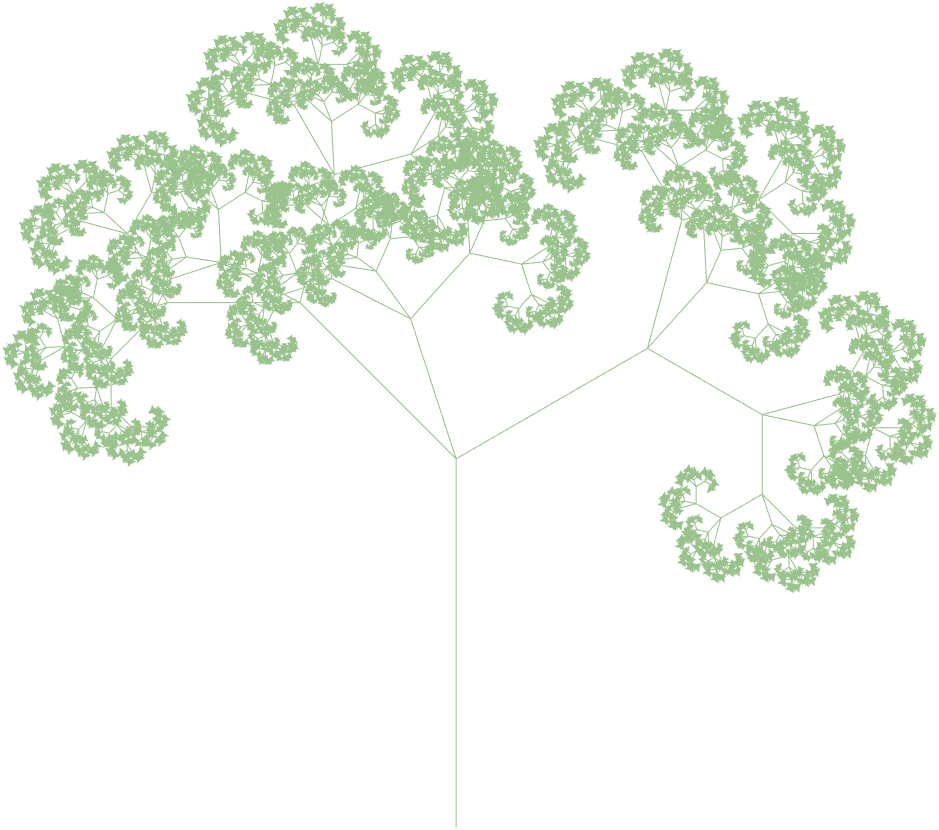
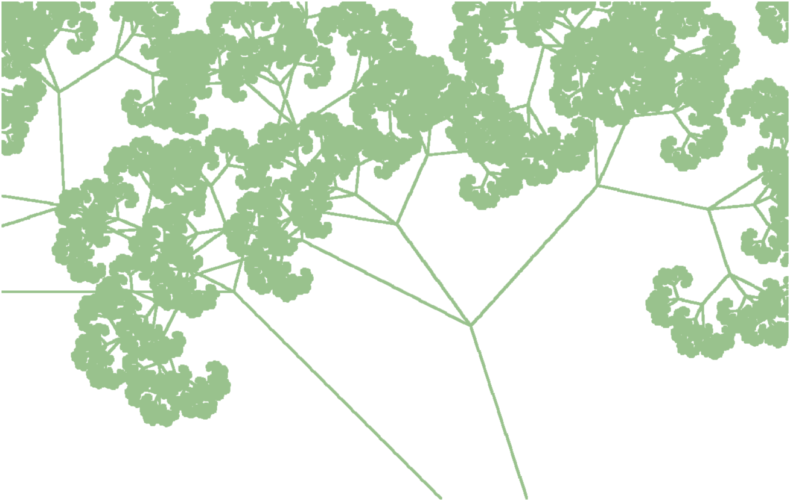
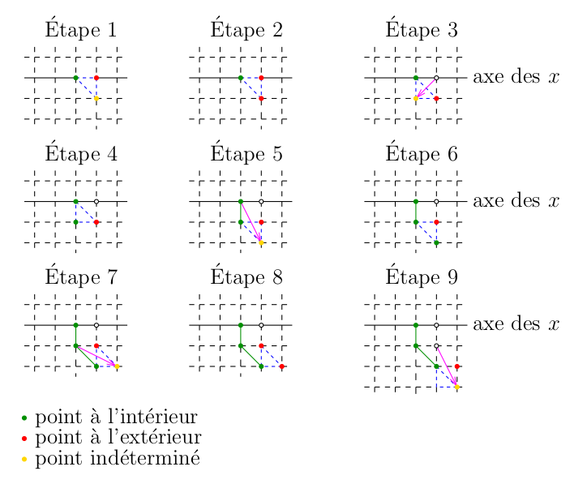

Programmation
Nous avons déjà introduit la programmation dans le document . Définir des fonctions est fondamental pour la programmation dans Matlab. Nous devons admettre que ce document illustre seulement une petite fraction de ce que Matlab peut faire. Nous espérons ajouter plus d'exemples dans le future.
La fonction présentée dans la section n'est pas utilisée pour les calculs numériques mais c'est un outil très utile pour exécuter nos tâches académiques régulières.
Itération des fonctions
La version standard de Matlab n'a pas de fonctions pour exécuter les méthodes itératives. L'utilisateur doit donc programmer Matlab pour exécuter ces méthodes. L'exemple suivant illustre comment cela peut être fait pour la méthode du point fixe. L'approche est semblable pour d'autres méthodes itératives.
Exemple: Nous considérons l'équation \(\displaystyle p(x) = -x^{5/2}/8 - 5x/4 + 1/2 = 0\). Puisque \(p\) est une fonction continue, \(p(0) = 1/2 > 0\) et \(p(1) = -7/8 < 0\), il découle du théorème des valeurs intermédiaires qu'il existe au moins une solution de cette équation dans l'intervalle \([0,1]\).
Nous avons que \(p(x) = 0 \iff g(x) = -x^{5/2}/8 - x/4 + 1/2 = x \). Ainsi, les solutions de \(p(x) = 0\) sont les points fixes de \(g\) et vice-versa. Puisque \( 1/8 \leq g(x) \leq 1/2 \) et \(|g'(x)| = |-5x^{3/2}/16 - 1/4| \leq 9/16 < 1 \) pour \(0 \leq x \leq 1\), nous obtenons du théorème des points fixes qu'il existe un point fixe unique de \(g\) dans l'intervalle \([0,1]\) et que la suite \(x_0, x_1 = g(x_0), x_2 = g(x_1), \ldots, x_{n+1} = g(x_n), \ldots \) converge vers ce point fixe quelque soit la valeur initiale \(x_0 \in [0,1]\). Donc, nous obtenons la solution de \(p(x) = 0\) dans l'intervalle \([0,1]\) en obtenant le point fixe de \(g\) dans cet intervalle.
Nous débutons les itérations avec \(x_0 = 0.5\) et utilisons \(x_{20}\) comme estimée de la solution. Le code en Matlab suivant, qui se trouve dans le fichier m , fait tout le travail pour nous.
% Starting value of x for the iteration. x = 0.5;
% Number of iterations. n = 20;
% loop. for i = 1:n x = -x.^(5/2)/8 - x/4 + 1/2; end
% Return the final value of the iteration. x
Ce n'est pas une fonction mais un simple script que Matlab peut exécuter. Si nous exécutons fxpt1 dans Matlab, alors il calcule \(20\) itérations de la fonction \(g\) à partir de \(x = 0.5\) et affiche la \(\displaystyle 20^{e}\) itération.
>> format short, fxpt1
x = 0.3905
Cependant, le script ci-dessus n'est pas pratique car nous devons modifier le fichier fxpt1.m à chaque fois que l'on change la fonction à itérer, la valeur initiale ou le nombre d'itérations.
Étant donnés le nom (entre apostrophes) ou l'anse funct d'un fonction, une valeur initiale x0 et un nombred'itérations n, la fonction fxpt2 définie dans le fichier m calcule les n premières itérations de la fonction associée à funct en débutant avec la valeur initiale x0.
% x = fxpt2(funct,x0,n)
%
% This function returns the result of n iterations of the function
% funct starting with the value x = x0 .
function x = fxpt2(funct,x0,n)
x = x0;
for i=1:n
x = feval(funct,x);
end
end
Exemple (suite): Pour exécuter \(20\) itérations de la fonction \(g\) à partir de \(x = 0.5\), nous définissons en premier la fonction \(g\) dans Matlab et puis utilisons la fonction fxpt2 avec les arguments g, 0 et 20.
>> g = @(x) -x.^(5/2)/8 - x/4 + 1/2; ... fxpt2(g,0.5,20)
ans = 0.3905
Remarque: Si nous utilisons la ligne x = funct(x); au lieu de la ligne x = feval(funct,x); dans le script pour la fonction fxpt2, alors la fonction fxpt2 n'accepterait que les anses de fonctions comme premier argument. En utilisant la fonction feval(), les noms de fonctions (entre apostrophes) peuvent aussi être fournis comme premier argument de la fonction fxpt2.
Champs de vecteurs
Nous considérons un système d'EDO autonome de la forme
\[ \vec{x}'(t) = f(\vec{x}(t),p) \] où \(\vec{x} \in \mathbb{R}^2\) et \(p \in \mathbf{R}^m\) est un vecteur de paramètres (possiblement vide) pour la fonction \(f\).Comme nous l'avons promis dans l'exemple portant sur l'équation de van der Pol dans le document , nous fournissons maintenant une fonction pour dessiner les champs de vecteurs qui offre une alternative à la fonction quiver. Nous l'avons appelée vctfld. Cette fonction offre l'option de dessiner le champ de vecteurs tel que le vecteur dessiné à partir d'un point \(\vec{x}\) est proportionnel au vecteur normalisé \(\displaystyle \|f(\vec{x}\|^{-1} f(\vec{x})\). Nous allons illustrer l'utilité de cette option avec l'exemple de l'équation de van der Pol ci-dessous. Il est aussi possible d'utiliser la fonction vctfld pour tracer des orbites par dessus le champ de vecteurs.
Matlab n'a pas de fonctions simples pour dessiner une flèche. Nous avons créé notre propre petite fonction pour dessiner des flèches. Nous l'appelons plotArrow. Le code de cette fonction se trouve dans le fichier m . Ce fichier peut être téléchargé en cliquant avec le bouton droit de la souris sur le lien précédent et en choisissant Save link as ... → Save file. Cette fonction ne dessine pas des flèches très élégantes mais les flèches qu'elle dessine sont parfaitement suffisantes pour dessiner un champ de vecteurs. Le code de cette fonction n'est pas très sophistiqué et n'exige pas d'explications supplémentaires.
Le code de la fonction vctfld affiché ci-dessous se trouve dans le fichier m qui peut être téléchargé en cliquant sur le lien précédent comme nous l'avons déjà expliqué ci-dessus. Cette fonction utilise le tableau de cellules varargin pour gérer un nombre variable d'arguments comme cela est fait par les fonctions prédéfinies dans Matlab.
Les points suivants doivent être pris en considération lorsque vctfld est utilisée.
- Pour tirer avantage de l'optimisation de Matlab pour les fonctions qui sont array smart, la représentation dans Matlab de la fonction \(f\) doit être dans le format [ f1(X1,X2,p) ; f2(X1,X2,p) ]. L'expression funct peut être le nom de cette fonction (entre apostrophes), l'anse de cette fonction, ou même une expression littéral dans le format ci-dessus (entre apostrophes).
- Le champ de vecteurs est dessiné seulement dans la région du plan délimitée par B(1) < X1 < B(2) et B(3) < X2 < B(4).
- La valeur de scaled détermine si le vecteur dessiné à partir du point \(\vec{x}\) est proportionnel à \(f(\vec{x},p)\) ou à \(\displaystyle \|f(\vec{x},p)\|^{-1}f(\vec{x},p)\). Nous avons que scaled = 0 (défaut) dans le premier cas et scaled = 1 dans le deuxième cas.
- L'argument facultatif init_conds est une matrice de dimensions \( 2 \times k\) où chaque colonne est un vecteur \(\vec{x}_0\). L'orbite \( \{ \vec{x}(t) : -t_f < t < t_f \text{ avec } \vec{x}(0) = \vec{x}_0 \} \) est tracée pour chaque \(\vec{x}_0\) donné par init_conds. Les parties de l'orbite qui sont à l'extérieur de la région définie par B ne sont pas dessinées. De plus, les parties de l'orbite associées à \( t > t_f \) ou \( t < -t_f \) ne sont pas dessinées même si elles pourraient faire parties de la région définie par B. Cela démontre que les résultats d'une visualisation numérique doivent toujours être interprétés avec extrême prudence.
% vctfld(funct,B,p,options)
%
% Function to draw the vector field of a system of ODE of the form
% dX/dt = f(X1,X2,p)
% with X = (X1,X2) in R^2.
%
% funct is the function that defines the right hand side of the system
% of ODE. This function must be in the format
% f:(X1,X2,p) -> [ f1(X1,X2,p) ; f2(X1,X2,p) ]
% where the functions f1 and f2 are array smart.
% funct can be the name of a function (between apostrophes),
% the handle of a function or an expression of the form
% '[... ; ...]'. In this last case, the variable names
% must be X1, X2 and p.
% B = [a b c d] provides the limits of the region [a,b] x [c,d] of the plan
% where the vector field is drawn. We must have that a < b and c < b.
% p is a vector of parameters for the function f. If f does
% not depend on any parameter, then p must be defined as [].
%
% List of options:
% 'scaled' is 0 if the vector drawn from a point X is proportional to
% f(X1,X2,p) and scaled is 1 if the vector drawn from a point X is
% proportional to the normalized version of the vector f(X1,X2,p).
% If scaled is not defined, then scaled is set to 0.
% 'density' is a number. There are density x density equally spaced mesh
% points per unit square. If density is not given, then the
% density is set to 3.
% 'init_conds' is a matrix where each column of init_conds is an initial
% condition for dX/dt = f(X1, X2, p) at time t=0. An orbit is
% drawn for each initial condition. If init_conds is
% not given, then no orbit is drawn.
% 'tf' is used to determine the length of the interval of
% integration. The interval of integration is ]-tf , tf[.
% The value should be modify according to the velocity of the
% vector field. If tf is not given, then tf is set to 20.
% The list of options accepted by odeset can also be used.
% odeset('RelTol',1e-6,'AbsTol',[1e-5 1e-5]) is used by default.
%
% The Matlab solver used is ODE45.
%
function vctfld(funct,B,p,varargin)
if ( nargin < 3 )
disp('Not enough arguments, use help vctfld to get the instructions.');
return;
end
% Default values
ttlvar = 0;
scaled = 0;
density = 3;
tf = 20;
options = struct();
init_conds = [];
while ( ~isempty(varargin) )
switch lower(varargin{1})
case 'scaled'
scaled = varargin{2};
case 'density'
density = varargin{2};
case 'tf'
tf = varargin{2};
case 'init_conds'
init_conds = varargin{2};
otherwise
disp("Assuming that "+varargin{1}+" is an option for odeset.");
options = odeset(options,varargin{1},varargin{2});
end
varargin = varargin(3:length(varargin));
end
if ( isa(funct,'function_handle') )
f = funct;
if ( exist(func2str(funct), 'file') ~= 2 && ...
exist(func2str(funct), 'builtin') ~= 5 )
ttlvar = 1;
end
elseif ( exist(funct, 'file') == 2 || exist(funct, 'builtin') == 5 )
f = str2func(funct);
elseif ( ischar(funct) == 1 )
f = str2func(['@(X1,X2,p)',funct]);
ttlvar = 1;
else
disp('The vector field cannot be drawn. Either the argument is not ');
disp('the name or handle of an existing function, or it is not the ');
disp('description of a function.');
return;
end
% We select the mesh points.
spacing = 1/density;
X1min = B(1) + spacing;
X1max = B(2) - spacing;
if ( X1max < X1min )
disp('The X1 interval is too small for the selected density.')
return;
end
mesh_X1 = X1min:spacing:X1max;
X2min = B(3) + spacing;
X2max = B(4) - spacing;
if ( X2max < X2min )
disp('The X2 interval is too small for the selected density.')
return;
end
mesh_X2 = X2min:spacing:X2max;
size_X1 = length(mesh_X1);
size_X2 = length(mesh_X2);
% We create the figure.
cla;
hold on;
grid on;
if ( ttlvar == 1 )
title(['X'' = ',func2str(f)]);
else
title(['X'' = ',func2str(f),'(X1,X2,p)']);
end
xlabel('X1');
ylabel('X2');
axis([B(1) B(2) B(3), B(4)],'equal');
% We compute the vector f(X1,X2,p) at each mesh point.
[XX1,XX2] = meshgrid(mesh_X1,mesh_X2);
M = f(XX1,XX2,p);
M1 = M(1:size_X2,:);
M2 = M(size_X2+1:2*size_X2,:);
% We draw the vector field.
if ( scaled == 1 )
% The vector f(X1,X2,p) is normalized. It is also scaled by
% spacing before being drawn at (X1,X2) to avoid overlapping
% vectors.
for (i=1:size_X1)
for (j=1:size_X2)
N = norm([M1(j,i),M2(j,i)]);
if ( N > 0 )
Dir = spacing*[M1(j,i),M2(j,i)]/N;
else
Dir = [0,0];
end
Xs = [XX1(j,i),XX2(j,i)];
Xe = [XX1(j,i),XX2(j,i)] + Dir;
plotArrow(Xs,Xe,'scale',1/2,'theta',20,'Color','blue');
end
end
else
% We compute the norm of the vector at all the mesh points.
% The maximum of these norms is used to scale the vector
% f(X1,X2,p). The resulting vector is also scaled by
% spacing before being drawn at (X1,X2) to avoid overlapping
% vectors.
MaxN = max(max(sqrt(M1.^2 + M2.^2)));
if ( MaxN == 0 )
disp 'The vector field is null!';
return
end
for (i=1:size_X1)
for (j=1:size_X2)
Dir = spacing*[M1(j,i),M2(j,i)]/MaxN;
Xs = [XX1(j,i),XX2(j,i)];
Xe = [XX1(j,i),XX2(j,i)] + Dir;
plotArrow(Xs,Xe,'scale',1/2,'theta',20, 'Color','blue');
end
end
end
% We draw some orbits if requested.
F = @(t,X) f(X(1),X(2),p);
if ( size(init_conds,2) > 0 )
if ( length(fieldnames(options)) == 0 )
options = odeset('RelTol',1e-6,'AbsTol',[1e-6 1e-6]);
end
for i = 1:size(init_conds,2)
X0 = [init_conds(1,i);init_conds(2,i)];
t0 = 0;
for n = 0:1
[T,X] = ode45(F,[t0 tf], X0, options);
plot(X(:,1),X(:,2),'k')
tf = - tf;
end
end
end
end
Exemple (suite): Nous avons vu que l'équation de van der Pol peut être réduite au système d'EDO autonome suivant.
\[ \begin{split} x_1'(t) &= x_2(t) \\ x_2'(t) &= \mu (1-x_1(t)^2) x_2(t) - x_1(t) \end{split} \]Pour être en mesure d'utiliser notre nouvelle fonction vctfld pour dessiner le champ de vecteurs, nous exprimons premièrement la fonction du côté droit de ce système d'EDO dans le format requis et nous l'associons à l'anse funct.
>> funct = @(X1,X2,p) [ X2 ; p(1)*(1-X1.^2).*X2 - X1 ];
En ce qui concerne les autres arguments de la fonction vctfld, nous posons B = [-3 4 -3 3] et p = [1/2] comme nous l'avons fait dans l'exemple précédent au sujet de l'équation de van der Pol. Nous posons aussi scaled = 1 pour dessiner un vecteur proportionnel à la version normalisé du vecteur funct(X1,X2,p) à chaque point (X1,X2) du maillage, init_conds = [ 1 3 ; 1 1] pour tracer les orbites qui passent par \( (1,1) \) et \( (3,1) \) respectivement, et density = 4 pour obtenir \(4 \times 4\) points également distancés par carré unitaire. Nous assumons les valeurs données par défaut pour les autres arguments.
>> vctfld(funct,[-3 4 -3 3],[1/2],'scaled',1,'density', 4,'init_conds',[ 1 3 ; 1 1]);

En plus de la figure, nous obtenons aussi un message de précaution après la commande précédente. Nous obtenons ce message parce que les calculs pour obtenir l'orbite qui passe par \( (3,1) \) génèrent des valeurs au delà des limites de calculs pour \( t < -1.58\ldots \). Nous devons aussi noter que le système d'EDO est raide. Pour des systèmes d'EDO qui sont raides, il est généralement préférable d'utiliser le solveur ODE15s ou ODE23s de Matlab. Cependant, dans le cas présent, le message de précaution apparaît toujours en raison du grand intervalle d'intégration que nous utilisons pour tracer la partie de l'orbite qui passe par \( (3,1) \).
Nous répétons la commande précédente mais cette fois ci avec
scaled = 0 au lieu de
scaled = 1 pour dessiner un vecteur
proportionnel à funct(X1,X2,p) à chacun
des points (X1,X2) du maillage.
Nous obtenons des vecteurs dont la longueur représente la vélocité du
flot
à leur point de base.
>> vctfld(funct,[-3 4 -3 3],[1/2],'scaled',1,'density', 4,'init_conds',[ 1 3 ; 1 1]);

Cette fois ci, nous avons l'information sur la vélocité du
flot
mais nous avons perdu l'information sur la
direction du flot
au voisinage de l'origine.
En somme, les deux représentations du champ de vecteurs sont
nécessaires pour obtenir une image complète du comportement des
orbites.
Remarque: La fonction vctfld pourrait évidemment être améliorée. Par exemple, il serait bien si cette fonction acceptait des arguments pour formater les flèches utilisées pour dessiner le champ de vecteurs et pour formater les orbites. Nous laissons ce projet aux lecteurs qui seraient intéressés.
Champs de pentes
Dans une introduction aux EDO, il aurait été normal d'introduire
les champs de pentes
avant les champs de vecteurs
puisque que le premier est au sujet des EDO de la forme
\(x'(t) = f(t,x(t))\) avec \(x \in \mathbb{R}\) qui sont étudiées avant
les systèmes d'EDO. Cependant, ce document ne prétend pas être une
introduction aux EDO. Puisqu'il est facile de modifier le code pour la
fonction vctfld pour obtenir une fonction
qui dessine les champs de pentes
, nous l'avons fait.
Nous rappelons au lecteur qu'un champ de pentes associé à une EDO \(x'(t) = f(t,x(t))\) est produit de la façon suivante. Nous choisissons plusieurs points (également distancés) \( (t,x) \) dans le plan pour former un maillage et dessinons à partir de chacun de ces points \( (t,x) \) un vecteur dans la direction \((1,f(t,x))\). La pente de la droite qui contient ce vecteur est \( f(t,x) \). La tradition est que les vecteurs dessinés ont tous la même longueur qui est plus petite que la plus petite distance entre les valeurs de \(t\) qui sont utilisées pour définir le maillage. Cette dernière condition est pour garantir que les vecteurs ne chevauchent pas.
La fonction pour dessiner les champs de pentes que nous avons créée est appelée slpfld. Le code pour cette fonction se trouve dans le fichier m qui peut être téléchargé en cliquant sur le lien précédent comme nous l'avons déjà expliqué ci-dessus.
>> help slpfld
slpfld(funct,B,p,options)
Function to draw the slope field of an ODE of the form
dx/dt = f(t,x,p)
with x in R.
funct is the function that defines the right hand side of the ODE.
This function must be an array smart function.
funct can be the name of a function (between apostrophes),
the handle of a function or an expression of the form
'...'. In this last case, the variable names t, x and p must
be used.
B = [a b c d] provides limits of the region [a,b] x [c,d] of the
t,x plan where the slope field is drawn. We must have that
a < b and c < b.
p is a vector of parameters for the function f. If f does
not depend on any parameter, then p must be defined as [].
List of options:
'density' is a number. There are density x density equally spaced mesh
points per unit square. If density is not given, then the
density is set to 3.
'init_conds' is a vector where each component of init_conds is an initial
condition for dx/dt = f(t,x,p) at time t=0. The graph
of the solution with this initial condition is drawn.
If init_conds is not given, then no graph is drawn.
The list of options accepted by odeset can also be used.
odeset('RelTol',1e-6,'AbsTol',1e-5) is used by default.
The Matlab solver used is ODE45 .
Exemple: Nous dessinons le champ de pente de l'EDO \(x'(t) = p_1\sin(x(t)+t + p_2)\) pour \( -5 < t < 5\) et \( -4 < x < 4\), où \(\vec{p} \in \mathbb{R}^2\) est un paramètre arbitraire. En particulier, nous sommes intéressé au cas \(\vec{p} = (2,3)\).
>> slpfld('p(1)*sin(x+t+p(2))',[-5 5 -4 4],[2,3],'density',4,'init_conds',[-3 0 3]);

Diagrammes de bifurcation
À la section du document , nous avons affiché plusieurs images du diagramme de bifurcation du système dynamique discret généré par la fonction logistique. Ces images ont été produites à l'aide de la fonction de Matlab bifurc defined in the m-file .
>> help bifurc
bifurc(funct,Range,x0,stepsize,N)
This function draws the bifurcation diagram of the dynamical
system generated by the function funct inside the
region [R(1),R(2)]x[R(3),R(4)].
funct is a function name between commas or a function handle.
The function is of the form y = f(x,m).
Range is an array with the limits of the region of the
bifurcation diagram that will be displayed; namely,
Range(1) <= m <= Range(2) and Range(3) <= x <= Range(4)
x0 is the initial value for the iterations of f; namely,
x_{n+1} = f(x_n,m) with x_0 = x0.
stepsize is the step size for m. The stable periodic orbit
of x -> f(x,m) is plotted for m = Range(1), Range(1) + stepsice,
Range(1) + 2 stepsice, ..., Range(1) + k stepsice where
k = floor((range(2)-range(1))/stepsize).
N is an array where N(1) is the number of iterations to compute.
Only the x_n for N(1)-N(2) <= n <= N(1) are plotted.
N(2) should be large enought to include periodic orbits
with a large period.
The default value is [200,100].
Nous devons choisir judicieusement les valeurs de
stepsize et N pour produire
un beau diagramme de bifurcation. En raison des erreurs d'arrondi, il
y a une limite inférieur sur les dimensions de la région du diagramme de
bifurcation qui peut être dessiné avec précision
.
Systèmes itératifs de fonctions
Pour une introduction aux systèmes itératifs de fonctions (SIF), le lecteur peut consulter le document .
Voici quelques exemples de SIF.
Triangle de Sierpinski: Cet ensemble est le
\[ \begin{split} &f_1(\vec{x}) = \begin{pmatrix} 1/2 & 0 \\ 0 & 1/2 \end{pmatrix} \vec{x} + \begin{pmatrix} 0 \\ 1/2 \end{pmatrix} \ , \quad f_2(\vec{x}) = \begin{pmatrix} 1/2 & 0 \\ 0 & 1/2 \end{pmatrix} \vec{x} + \begin{pmatrix} 1/2 \\ 0 \end{pmatrix} \ \\ &\text{and} \quad f_3(\vec{x}) = \begin{pmatrix} 1/2 & 0 \\ 0 & 1/2 \end{pmatrix}\vec{x} \ . \end{split} \]point fixe
de la fonction \(f^c\) induite par le SIF \( \{ f_j\}_{j=1}^3 \) oùRappelons que \(\displaystyle f^c(X) = \bigcup_{j=1}^3 f_j(X)\) pour \(X \in (\mathbb{R}^2)^c\).
Fougère: Cet ensemble est le
\[ \begin{split} &f_1(\vec{x}) = \begin{pmatrix} 0 & 0 \\ 0 & 0.16 \end{pmatrix} \vec{x} \ , \quad f_2(\vec{x}) = \begin{pmatrix} 0.85 & 0.04 \\ -0.04 & 0.85 \end{pmatrix} \vec{x} + \begin{pmatrix} 0 \\ 1.6 \end{pmatrix} \ , \\ &f_3(\vec{x}) = \begin{pmatrix} 0.20 & -0.26 \\ 0.23 & 0.22 \end{pmatrix} \vec{x} + \begin{pmatrix} 0 \\ 1.6 \end{pmatrix} \ \text{and} \quad f_4(\vec{x}) = \begin{pmatrix} -0.15 & 0.28 \\ 0.26 & 0.24 \end{pmatrix} \vec{x} + \begin{pmatrix} 0 \\ 0.44 \end{pmatrix} \ . \end{split} \]point fixe
de la fonction \(f^c\) induite par le SIF \( \{ f_j\}_{j=1}^4 \) oùRappelons que \(\displaystyle f^c(X) = \bigcup_{j=1}^4 f_j(X)\) pour \(X \in (\mathbb{R}^2)^c\).
Feuille: Cet ensemble est le
\[ \begin{split} &f_1(\vec{x}) = \begin{pmatrix} 0.6 & 0 \\ 0 & 0.6 \end{pmatrix} \vec{x}_ + \begin{pmatrix} 0.18 \\ 0.36 \end{pmatrix} \ , \quad f_2(\vec{x}) = \begin{pmatrix} 0.6 & 0 \\ 0 & 0.6 \end{pmatrix} \vec{x} + \begin{pmatrix} 0.18 \\ 0.12 \end{pmatrix} \ , \\ &f_3(\vec{x}) = \begin{pmatrix} 0.4 & 0.3 \\ -0.3 & 0.4 \end{pmatrix} \vec{x} + \begin{pmatrix} 0.27 \\ 0.32 \end{pmatrix} \ \text{and} \quad f_4(\vec{x}) = \begin{pmatrix} 0.4 & -0.3 \\ 0.3 & 0.4 \end{pmatrix} \vec{x} + \begin{pmatrix} 0.27 \\ 0.09 \end{pmatrix} \ . \end{split} \]point fixe
de la fonction \(f^c\) induite par le SIF \( \{ f_j\}_{j=1}^4 \) oùRappelons que \(\displaystyle f^c(X) = \bigcup_{j=1}^4 f_j(X)\) pour \(X \in (\mathbb{R}^2)^c\).
Ces SIF et plusieurs autres SIF sont définis dans le fichier m .
Nous fournissons deux fonctions dans Matlab pour
approximer le point fixe
de la fonction \(f^c\)
induite par un SIF. La première fonction décrite ci-dessous applique
strictement la procédure itérative au SIF donné. Les seules inexactitudes
sont dues aux calculs numériques. Cependant, cette fonction
ne peut pas effectuer beaucoup d'itérations avant d'épuiser
la mémoire de l'ordinateur. Nous supposons que l'ensemble initial
est un ensemble simple (e.g. une courbe polygonale). Si le SIF est
composé de \(N\) fonctions, alors après une itération, nous avons
\(N\) copies de l'ensemble initial transformé.
Après 2 itérations, nous avons \(N^2\) copies de l'ensemble
initial transformé. Et ainsi de suite. Si \(N=3\), alors,
après 10 itérations, nous avons déjà \(3^{10]) = 59,049 \)
copies de l'ensemble initial transformé. Nous atteignons rapidement
la capacité limite de la mémoire de l'ordinateur.
% function ifs(X, N, syst, colour)
%
% Compute the iterations of the function defined by an IFS starting
% with a given closed polygonal curve.
%
% X : Initial polygonal curve, a (2 x n) matrix storing the corners
% of the closed polygonal curve.
% N : The number of iterations.
% syst : A cell array of function handles for the functions in the IFS.
% colour : One of the colours accepted in Matlab plot/fill.
% The default colour is blue.
%
function ifs(X, N, syst, colour)
if ( nargin < 4 )
colour = 'blue';
if ( nargin < 3 )
disp("Not enough arguments. Use the help command with ifs.")
return;
end
end
for i=1:N
fprintf('%d ',i)
XX = [];
for j=1:length(syst)
XX = [XX , syst{j}(X), [NaN;NaN]];
end
X = XX;
end
cla;
hold on;
axis off;
axis equal;
% If the function fill() was behaving like the function
% plot() when a point with coordinates NaN is inserted,
% then the following three lines could be used instead of all the
% lines of code below them.
%
% p = fill(X(1,:), X(2,:),'b');
% p.FaceColor = colour;
% p.EdgeColor = colour;
I = find(isnan(X(1,:)));
i1 = 1;
for i = 1:length(I)
i2 = I(i)-1;
p = fill(X(1,i1:i2), X(2,i1:i2),'b');
set(p,'FaceColor',colour);
set(p,'EdgeColor',colour);
if (i < length(I) )
i1 = I(i)+1;
end
end
fprintf('\nThe figure has been drawn.\n');
end
Le premier argument de la fonction précédente doit être une courbe polygonale fermée. L'ensemble initiale est l'ensemble des points inclus dans la région bornée par la courbe polygonale fermée. Il est possible de modifier la fonction précédente pour accepter des ensembles initiaux plus généraux. La fonction ci-dessus se trouve dans le fichier m .
Exemple: Nous dessinons le triangle de Sierpinski. La courbe polynomiale fermée initiale que nous choisissons est définie par le triangle avec les sommets aux points \( (0,0), (1,0) \) et \( (0,1) \). Nous calculons 6 itérations de la fonction \(f^c\) induite par le SIF associé au triangle de Sierpinski. Ce SIF est définie dans le fichier m par les commandes suivantes:
% Sierpinski triangle
S1 = @(x) 0.5*x + [0;0.5]; ...
S2 = @(x) 0.5*x + [0.5;0]; ...
S3 = @(x) 0.5*x; ...
S = {S1, S2, S3};
En raison de la simplicité du triangle de Sierpinski et du nombre limité de pixels des écrans d'ordinateur, nous obtenons après 6 itérations presque la meilleure représentation du triangle de Sierpinski qui peut être affichée.
>> close all; >> ifs_systems; >> ifs(X,6,S,'red') 1 2 3 4 5 6 The figure has been drawn

Le résultat n'est pas aussi bien pour les autres SIF car
ce sont des points fixe
pour des SIF qui
sont beaucoup plus complexes. Le lecteur devrait répéter cet exemple
avec les autres SIF dans le fichier m pour observer les limites de cette fonction.
Pour éviter le problème associé à la croissance exponentielle du nombre de copies de l'ensemble initial transformé, nous modifions notre méthode de calcul des itérations. Nous redimensionnons le domaine. Chaque SIF est composé de fonctions de la forme \(f_j(\vec{x}) = A_j \vec{x} + \vec{b}_j\) pour une matrice \(A_j\) de dimensions \( 2\times 2\) et un vecteur \(\vec{b}_j\) donnés. Nous possons \( \vec{y} = M \vec{x} \) pour un grand nombre entier positif \(M\). Dans le nouveau système de coordonnées, la fonction \(f_j\) devient
\[ \begin{equation} \label{Equ1} g_j(\vec{y}) = M f_j\left(M^{-1} \vec{y}\right) = M \left( A_j \left( M^{-1} \vec{y} \right) + \vec{b}_j\right) = A_j \vec{y} + M \vec{b}_j \ . \end{equation} \]Ainsi, dans le nouveau système de coordonnées, le SIF est donné par \( \{ g_j\}_{j=1}^J \) et la fonction \( f^c \) devient la fonction \( g^c \) définie par \(\displaystyle g^c(Y) = \bigcup_{j=1}^J g_j(Y)\).
En théorie, dans le nouveau système de coordonnées, l'ensemble initial que nous devrions utiliser est l'image \(T\) de l'ensemble initial \(S\); c'est-à-dire, \( T = \{ M\vec{x} : \vec{x} \in S\} \). Après cela, nous pouvons utiliser le SIF \( \{ g_j\}_{j=1}^J \) composé des fonctions données en \eqref{Equ1} avec l'ensemble initial \(T\). En pratique, nous utilisons l'ensemble initiale \(T\) défini par
\[ T = \{ \text{round}(M\vec{x}) \equiv ( \text{round}(M x_1) , \text{round}(M x_2) ) : \vec{x} \in S \} \subset \mathbb{Z} \times \mathbb{Z} \ , \]où \(\text{round}(x)\) est le nombre entier le plus près de \(x\). Pour les nombres comme \(3.5\), \(\text{round}(x)\) est le nombre entier le plus près de \(x\) qui est aussi le plus loin de l'origine (implémentation de Matlab). Après cela, nous utilisons le SIF \( \{ g_j\}_{j=1}^J \) composé des fonctions données en \eqref{Equ1} restreint à l'espace \(\mathbb{Z} \times \mathbb{Z}\); c'est-à-dire, nous utilisons \(\displaystyle \text{round}(g_j(\vec{y}))\) au lieu de \(\displaystyle g_j(\vec{y})\). Ceci est équivalent à représenter \(S\) avec les pixels de l'écran d'ordinateur et à mettre en oeuvre le SIF sur les pixels.
Puisque nous obtenons seulement des vecteurs avec des coordonnées
entières, le nombre de vecteurs dans l'union des copies de l'ensemble
initial transformé ne croit pas de façon exponentielle. En fait,
il converge
vers le nombre de points avec des
coordonnées entières qui sont inclus
(ou presqu'inclus
) dans l'ensemble qui
représente le point fixe
du SIF dans le
nouveau système de coordonnées. En raison de la troncature des
coordonnées exactes pour obtenir des coordonnées entières, nous
naturellement perdons en précision. Cependant, si M est grand,
alors la perte de précision n'affecte pas réellement l'image finale
qui est affichée car la qualité de l'image est toujours limitée
par le nombre de pixels des écrans d'ordinateur.
L'approche décrite dans les paragraphes précédents est mise à l'oeuvre dans la fonction définie ci-dessous. Pour simplifier le programme informatique, les ensembles initiaux doivent être des courbes polygonales. Comme pour la fonction ifs, cette fonction peut être modifiée pour accepter des ensembles initiaux plus généraux.
% function ifs2(X, N, syst, M, colour)
%
% Compute the iterations of the function defined by an IFS starting
% with a given closed polygonal curve.
%
% X : Initial set, a (2 x n) matrix storing the corners of the
% polygonal curve.
% N : The number of iterations.
% syst : A cell array of function handles for the functions in the IFS.
% M : The number of points per unit length. The default value is
% 400 points.
% colour : One of the colours accepted in Matlab plot.
% The default colour is blue.
%
function ifs2(X, N, syst, M, colour)
if ( nargin < 5 )
colour = 'blue';
if ( nargin < 4 )
M = 400;
if ( nargin < 3 )
disp("Not enough arguments. Use the help command with ifs.")
return;
end
end
end
% We rescale the initial polygonal curve to get the set T.
ro = [];
co = [];
X1 = round(M*X(:,1));
for i = 2:size(X,2)
X2 = round(M*X(:,i));
R = max(abs(X1(1,1)-X2(1,1)),abs(X1(2,1)-X2(2,1)))+1;
ro = [ro,round(linspace(X1(1,1),X2(1,1),R))];
co = [co,round(linspace(X1(2,1),X2(2,1),R))];
X1 = X2;
end
rc = unique([ro;co]','rows')';
% We compute the iterations of the IFS starting at T.
for i = 1:N
fprintf('%d ',i)
RC = [];
for j=1:length(syst)
RC = [RC , syst{j}(rc,M)];
end
rc = round(RC);
rc = unique(rc','rows')';
end
cla;
hold on;
axis off;
axis equal;
% We rescale the resulting set to the initial coordinate system.
ro = rc(1,:)/M;
co = rc(2,:)/M;
% We draw the resulting set.
p = plot(ro,co,'.','LineWidth',0.1);
set(p,'Color',colour);
fprintf('\nThe figure has been drawn.\n');
end
Cette fonction se trouve dans le fichier m . La valeur de \(M\) peut être choisie pour tirer avantage au maximum de la qualité de l'écran d'ordinateur. Nous avons défini plusieurs SIF dans le fichier m . Par exemple, le SIF pour le triangle de Sierpinski est maintenant défini par les commandes suivantes:
% Sierpinski triangle
S1 = @(x,M) 0.5*x + M*[0;0.5]; ...
S2 = @(x,M) 0.5*x + M*[0.5;0]; ...
S3 = @(x,M) 0.5*x; ...
S = {S1, S2, S3};
La seul différence entre cette définition du SIF pour le triangle de Sierpinski et la définition du SIF pour le triangle de Sierpinski donnée pour la fonction ifs ci-dessus est l'addition du paramètre \(M\) pour redimensionner le système.
Exemple: Nous dessinons la fougère représentée par le point fixe de la fonction \(f^c\) induite par le SIF donné au début de cette section. La définition de ce SIF est aussi incluse dans le fichier m . L'ensemble initial que nous choisissons est la courbe polygonale fermée définie par le triangle avec les sommets aux points \( (0,0), (1,0) \) et \( (0,1) \). Nous calculons 18 itérations de \(f^c\).
>> X= [ 0 1 0 0 ; 0 0 1 0]; >> ifs2_systems; >> ifs2(X,18,F,600,'green') 1 2 3 4 5 6 7 8 9 10 11 12 13 14 15 16 17 18 The figure has been drawn

Nous dessinons la feuille représentée par le point fixe de la fonction \(f^c\) induite par le SIF donné au début de cette section. La définition de ce SIF est aussi incluse dans le fichier m . Nous utilisons le même ensemble initial qui ci-dessus et calculons 20 itérations de \(f^c\).
>> ifs2(X,20,L,600,'red') 1 2 3 4 5 6 7 8 9 10 11 12 13 14 15 16 17 18 19 20 The figure has been drawn

Méthode de coupe adaptative
La méthode de coupe adaptative est décrite à la section du document . C'est un compromis entre la méthode utilisée pour la fonction de Matlab ifs et la méthode utilisée pour la fonction de Matlab ifs2. La méthode de coupe adaptative est mise en oeuvre dans la fonction de Matlab suivante.
% function ifs_adaptive(X, delta, syst, matr, diam, colour)
%
% Draw the fixed point K of the function defined by an IFS using the
% adaptive cut method.
%
% X : A point on K, a (2 x 1) matrix in Matlab.
% delta : The Hausdorff distance between the set A drawn and the set K.
% syst : A cell array of function handles for the functions in the IFS.
% matr : A cell array of (2 x 2) matrices where matr{j} is the matrix
% in the definition of syst{j}. We assume that the functions
% in the IFS are of the form f(x) = Mx + b.
% diam : The estimated diameter of the fixed point K. The default value
% is 1.
% colour : One of the colours accepted in Matlab plot.
% The default colour is blue.
%
function ifs_adaptive(X, delta, syst, matr, diam, colour)
if ( nargin < 6 )
colour = 'blue';
if ( nargin < 5 )
diam = 1;
if ( nargin < 4 )
disp("Not enough arguments.")
disp("Use the help command with ifs_adaptive.")
return;
end
end
end
J = length(syst);
if ( J ~= length(matr) )
disp("syst and matr do not have the same dimension.")
disp("Use the help command with ifs.")
return;
end
cla;
hold on;
axis off;
axis equal;
A = [1 0 ; 0 1];
V = [];
nested(syst,matr,A,V,J,delta,X,gca,diam,colour);
fprintf('\nThe figure has been drawn.\n');
end
function nested(syst,matr,A,V,J,delta,X,axe,diam,colour)
for j=1:J
AA = A*matr{j};
VV = [V,j];
C = 2*max(max(abs(AA)))*diam;
if ( C < delta )
Y = X;
for k = length(VV):-1:1
Y = syst{VV(k)}(Y);
end
plot(axe,Y(1),Y(2),'.','LineWidth',0.1,'Color',colour);
else
nested(syst,matr,AA,VV,J,delta,X,axe,diam,colour);
end
end
end
La fonction ci-dessus se trouve dans le fichier m . Pour utiliser la fonction de Matlab ifs_adaptive, les matrices \(A_j\) utilisées pour la définition des fonctions \(f_j\) qui composent le SIF doivent être fournies séparément. Nous avons ajouté la liste de ces matrices à chacun des SIF définis dans le fichier m . Par exemple, la définition du SIF pour la fougère est la suivante.
% Fern
F1 = @(x) [0,0;0,0.16]*x; ...
F2 = @(x) [0.85,0.04;-0.04,0.85]*x + [0;1.6]; ...
F3 = @(x) [0.20,-0.26;0.23,0.22]*x + [0;1.6]; ...
F4 = @(x) [-0.15,0.28;0.26,0.24]*x + [0;0.44]; ...
F = {F1, F2, F3, F4}; ...
FM = { [0,0;0,0.16],[0.85,0.04;-0.04,0.85],[0.20,-0.26;0.23,0.22], ...
[-0.15,0.28;0.26,0.24] };
La liste FM contient les matrices \(A_j\) utilisées pour la définition des fonctions \(f_j\) du SIF.
Exemple: Nous utilisons la fonction de Matlab ifs_adaptive pour dessiner la fougère. Le point \((1,0)\) appartient au point fixe \(K\) de la fonction \(f^c\) induite par le SIF pour la fougère.
>> ifs_systems; >> ifs_adaptive([1;0],0.01,F,FM,2,'green'); The figure has been drawn.
La fonction ifs_adaptive demande moins d'espace mémoire sur l'ordinateur que la fonction ifs mais elle est quand même exigeante pour la carte graphique de l'ordinateur.
Le jeux du chaos
La méthode mise en oeuvre dans les fonctions de Matlab ifs et ifs2 n'est pas la seule méthode utilisée pour dessiner le point fixe \(K\) de la fonction \(f^c\) induite par un SIF \(\{f_j\}_{j=1}^J\). Le jeux du chaos est souvent utilisé pour dessiner le point fixe \(K\). Cette méthode requière très peu d'espace mémoire sur un ordinateur. Elle peut par contre nécessité une période importante de calcul sur ordinateur afin d'obtenir une belle image. Le jeux du chaos est décrit dans la section du document . Il est très simple de mettre en oeuvre le jeux du chaos sur un ordinateur. Cependant, cette méthode demande une distribution de probabilité soigneusement choisie pour le choix aléatoire de la fonction \(f_j\) à chaque itération comme cela est expliqué dans la section du document . Les fonctions de Matlab ifs_prob et ifs2_prob mettent en oeuvre le jeux du chaos. Ces fonctions se trouvent dans les fichiers m et respectivement. Le première fonction doit être utilisée avec des SIF comme ceux définis dans le fichier m alors que la deuxième fonction doit être utilisée avec des SIF comme ceux définis dans le fichier m .
SIF avec condensation
Les fonctions de Matlab ifs et ifs peuvent être utilisées pour dessiner le point fixe de la fonction \(f^c\) induite par un SIF avec condensation. Un exemple de SIF avec condensation est fourni par la collection de fonctions \( \{ f_j\}_{j=0}^3 \) où
\[ \begin{split} f_0(A) &= \{ \vec{x} : x_1 = 1/2 \ \text{and}\ 0 \leq x_2 \leq 1/2 \} \qquad \text{(La fonction de condensation)} \ , \\ f_1(\vec{x}) &= 0.6 \begin{pmatrix} \sqrt{2}/2 & -\sqrt{2}/2 \\ \sqrt{2}/2 & \sqrt{2}/2 \end{pmatrix} \left( \vec{x} - \begin{pmatrix} 1/2 \\ 0 \end{pmatrix} \right) + \begin{pmatrix} 1/2 \\ 1/2 \end{pmatrix} \\ &= 0.6 \begin{pmatrix} \sqrt{2}/2 & -\sqrt{2}/2 \\ \sqrt{2}/2 & \sqrt{2}/2\end{pmatrix} \vec{x} + \begin{pmatrix} 1/2 \\ 1/2 \end{pmatrix} - 0.6 \begin{pmatrix} \sqrt{2}/2 & -\sqrt{2}/2 \\ \sqrt{2}/2 & \sqrt{2})/2\end{pmatrix} \begin{pmatrix} 1/2 \\ 0 \end{pmatrix} \ , \\ f_2(\vec{x}) &= 0.6 \begin{pmatrix} 1/2 & \sqrt{3}/2 \\ -\sqrt{3}/2 & 1/2\end{pmatrix} \left( \vec{x} - \begin{pmatrix} 1/2 \\ 0 \end{pmatrix} \right) + \begin{pmatrix} 1/2 \\ 1/2 \end{pmatrix} \\ &= 0.6 \begin{pmatrix} 1/2 & \sqrt{3}/2 \\ -\sqrt{3}/2 & 1/2\end{pmatrix} \vec{x} + \begin{pmatrix} 1/2 \\ 1/2 \end{pmatrix} - 0.6 \begin{pmatrix} 1/2 & \sqrt{3}/2 \\ -\sqrt{3}/2 & 1/2\end{pmatrix} \begin{pmatrix} 1/2 \\ 0 \end{pmatrix} \\ \text{et} & \\ f_3(\vec{x}) &= 0.4 \begin{pmatrix} \cos(\pi/10) & -\sin(\pi/10) \\ \sin(\pi/10) & \cos(\pi/10) \end{pmatrix} \left( \vec{x} - \begin{pmatrix} 1/2 \\ 0 \end{pmatrix} \right) + \begin{pmatrix} 1/2 \\ 1/2 \end{pmatrix} \\ &= 0.4 \begin{pmatrix} \cos(\pi/10) & -\sin(\pi/10) \\ \sin(\pi/10) & \cos(\pi/10) \end{pmatrix} \vec{x} + \begin{pmatrix} 1/2 \\ 1/2 \end{pmatrix} - 0.4 \begin{pmatrix} \cos(\pi/10) & -\sin(\pi/10) \\ \sin(\pi/10) & \cos(\pi/10) \end{pmatrix} \begin{pmatrix} 1/2 \\ 0 \end{pmatrix} \end{split} \]pour tout ensemble \( A \subset \mathbb{R}^2\) et \(\vec{x} \in \mathbb{R}^2\). Rappelons que \(\displaystyle f^c(X) = \bigcup_{j=0}^3 f_j(X)\) pour \(X \in (\mathbb{R}^2)^c\). L'ensemble de condensation est \( \{\vec{x} : x_1 = 1/2 \ \text{et} \ 0 \leq x_2 \leq 1/2 \}\). Le point fixe de la fonction \(f^c\) induite par ce SIF avec condensation représente un arbre comme cela est illustré dans le prochain exemple.
Le SIF avec condensation ci-dessus est défini dans le fichier m par le code en Matlab suivant.
% Tree from an IFS with condensation
function rc = cond(x,M)
ro = [];
co = [];
X = [0.5,0.5;0,0.5];
X1 = round(M*X(:,1));
for i = 2:size(X,2)
X2 = round(M*X(:,i));
R = max(abs(X1(1,1)-X2(1,1)),abs(X1(2,1)-X2(2,1)))+1;
ro = [ro,round(linspace(X1(1,1),X2(1,1),R))];
co = [co,round(linspace(X1(2,1),X2(2,1),R))];
X1 = X2;
end
rc = unique([ro;co]','rows')';
end
Transl1 = [0.5;0.5]-[sqrt(2)/2,-sqrt(2)/2;sqrt(2)/2,sqrt(2)/2]*[0.3;0]; ...
Transl2 = [0.5;0.5]-[1/2,sqrt(3)/2;-sqrt(3)/2,1/2]*[0.3;0]; ...
Transl3 = [0.5;0.5]-[cos(pi/10),-sin(pi/10);sin(pi/10),cos(pi/10)]*[0.2;0]; ...
TC0 = str2func('cond'); ...
TC1 = @(x,M) 0.6*[sqrt(2)/2,-sqrt(2)/2;sqrt(2)/2,sqrt(2)/2]*x + M*Transl1; ...
TC2 = @(x,M) 0.6*[1/2,sqrt(3)/2;-sqrt(3)/2,1/2]*x + M*Transl2; ...
TC3 = @(x,M) 0.4*[cos(pi/10),-sin(pi/10);sin(pi/10),cos(pi/10)]*x ...
+ M*Transl3; ...
TC = {TC0, TC1, TC2, TC3};
Exemple: Le dessin du point fixe de la fonction \(f^c\) induite par le SIF avec condensation ci-dessus est produit par les commandes de Matlab suivantes. L'ensemble initial que nous choisissons est la courbe polygonale fermée définie par le triangle avec les sommets aux points \( (0,0), (1,0) \) et \( (0,1) \). Nous calculons 20 itérations de \(f^c\).
>> X= [ 0 1 0 0 ; 0 0 1 0]; >> ifs2_systems; >> ifs2(X,18,TC,2500,'#99C28D') 1 2 3 4 5 6 7 8 9 10 11 12 13 14 15 16 17 18 19 20 The figure has been drawn

Pour ceux qui voudraient répéter l'exemple précédent avec la fonction de Matlab ifs, le SIF avec condensation ci-dessus est aussi défini dans le fichier m .
Remarque: Nous confessons que la fonction de Matlab ifs génère des meilleures images que la fonction de Matlab ifs2 si l'ordinateur utilisé a suffisamment d'espace mémoire pour calculer plusieurs itérations de la fonction \(f^c\) induite par un SIF. Par exemple, 10 itérations de la fonction \(f^c\) induite par le SIF avec condensation ci-dessus donne l'image suivante.

Nous pouvons observer plus de détails fins de l'arbre.
Nous devons aussi garder en tête qu'il y a une grande perte de qualité de l'image quand nous exportons une figure produite avec Matlab au format png (ou tout autre format) même si 600 ppp est utilisé. En fait, le seul effet d'utiliser 600 ppp est de produire un très gros fichier en format png. La figure ci-dessous est produite en faisant un gros plan sur une section de la figure produite par la fonction de Matlab ifs2 avant d'exporter la figure en format png. Nous obtenons beaucoup de détails qui sont perdus dans la grande figure donnée à l'exemple précédent.

Il est aussi possible avec Matlab d'augmenter les dimensions d'une figure avant de l'exporter en format png. Ceci améliore la qualité de l'image sans générer un gros fichier en format png. C'est ce qui a été fait dans les exemples précédents. Afin d'augmenter les dimensions d'une figure, il peut être nécessaire d'augmenter en premier le nombre de points par unité de longueur quand nous utilisons la fonction de Matlab ifs2.
Ensembles de Julia
Il est démontré dans le document que l'ensemble de Julia \(J_R\) d'une fonction rationnelle \(R: \overline{\mathbb{C}} \to \overline{\mathbb{C}} \) est la fermeture de l'ensemble \( \displaystyle \bigcup_{n>0} R^{-n}(\{w\})\) où \(w \in J_R\). Il est facile de trouver les points fixes finis de \(R\) lorsque \(R\) est la fonction polynomiale \(P_c\) définie par \(P_c(z) = z^2 + c\) pour une constante \(c\), Elles sont données par \(z_\pm = (1 \pm \sqrt{1 - 4c})/2\). Pour \(c\neq 1/4\), si nous utilisons la branche principale de la fonction racine carrée (i.e. avec une partie réelle positive) pour calculer la racine carrée de \(1 -4 c\), alors \(|z_+| > 1/2\). Puisque \(P_c'(z) = 2z\), nous obtenons que \(|P_c'(z_+)|>1\). Donc \(z_+\) est un point fixe répulsif. Ainsi \(z_+ \in J_{P_c}\). Pour \(c = 1/4\), nous avons que \(z_+ = z_- = 1/2\) est un point fixe neutre. Néanmoins, la méthode pour dessiner l'ensemble de Julia \(J_{P_c}\) fonctionne pour \(c = 1/4\).
Nous n'avons pas à dessiner l'ensemble
\(\displaystyle \overline{\bigcup_{n>0} P_c^{-n}(\{z_+\})}\)
pour obtenir une représentation graphique de l'ensemble de Julia
de \(P_c\) parce que \(\displaystyle \bigcup_{n>0} R^{-n}(\{w\})\)
et \(\overline{\displaystyle \bigcup_{n>0} R^{-n}(\{w\})}\)
produisent essentiellement la même figure en raison de la limite sur
la résolution des écrans d'ordinateurs.. De plus, nous devons éviter
de tirer des conclusions fines
au sujet d'un ensemble de
Julia en se basant sur la figure qui apparaît sur l'écran d'un
ordinateur. Nous ne devons pas oublier qu'un pixel sur l'écran d'un
ordinateur représente un disque avec un petit rayon dans le plan
complexe, non pas un seul point. Ainsi, ce qui peut ressembler à une
courbe continue peut en fait être une collection infinie de courbes fermées
disjointes ou de points. Seul la théorie peut nous dire si c'est une
courbe continue.
Le code de la fonction de Matlab suivante se trouve dans le fichier m . Cette fonction met en oeuvre la méthode décrite ci dessus. Le nombre d'itérations inverses de cette fonction est limité par la grandeur de l'espace mémoire de l'ordinateur qui est attribué à Matlab car cette fonction crée de très grands vecteurs. La borne supérieure typique sur le nombre d'itérations inverses est d'environ 20.
% function julia1(c, N, colour)
%
% Draw the Julia set of p_c(z) = z^2 + c.
%
% c : Any complex number. The default value is i.
% N : The number of backward iterations. The default value is 17.
% colour : One of the colours accepted by Matlab.
% The default colour is blue.
%
function julia1(c, N, colour)
if ( nargin < 3 )
colour = 'blue';
if ( nargin < 2 )
N = 17;
if ( nargin < 1 )
c = i;
end
end
end
% Compute the repelling fixed point (1 + sqrt(1 - 4c))/2 , where
% sqrt(1 - 4c) is the square root of 1 - 4c with a non negative
% real part.
x = real(1-4*c);
y = imag(1-4*c);
q = sqrt(x^2+y^2);
if ( x == 0 && y == 0 )
u = 0;
v = 0;
elseif ( x > 0 )
u = sqrt(2*(x+q))/2;
v = y/(2*u);
else
v = sqrt(2*(-x+q))/2;
u = y/(2*v);
end;
w = (1 + (u+i*v))/2;
fprintf('%f + %f i is a repelling fixed point if c ~= 1/4.\n',real(w),imag(w));
fprintf('We use %f + %f i as starting point.\n',real(w),imag(w));
% Compute the bachward iterations and draw the Julia set.
x = real(w-c);
y = imag(w-c);
figure;
for n = 1:N
q = sqrt(x.^2+y.^2);
for j = 1:length(x)
if ( x(j) == 0 && y(j) == 0 )
u(j) = 0;
v(j) = 0;
elseif ( x(j) > 0 )
u(j) = sqrt(2*(x(j)+q(j)))/2;
v(j) = y(j)/(2*u(j));
else
v(j) = sqrt(2*(-x(j)+q(j)))/2;
u(j) = y(j)/(2*v(j));
end;
end
x = [ u , -u ];
y = [ v , -v ];
% We draw the points.
plot(x,y,'.','LineWidth',0.1,'Color',colour);
% Go on with the next iteration (if there is one).
x = [ u , -u ] - real(c);
y = [ v , -v ] - imag(c);
hold on
end
axis equal;
grid on
title(['p(z) = z^2 + ',num2str(real(c)),' + ',num2str(imag(c)),'i']);
hold off
display('The drawing is completed.');
end
Exemple: L'ensemble de Julia \(J_{P_{-1}}\) de la fonction polynomiale \(P_{-1}\) définie par \(P_{-1}(z) = z^2 -1\) est représenté dans la figure ci-dessous.
>> julia1(-1,20,'k');
1.618034 + 0.000000 i is a repelling fixed point if c ~= 1/4. We use 1.618034 + 0.000000 i as starting point. The drawing is completed.

Il existe une autre méthode pour dessiner l'ensemble de Julia d'une fonction rationnelle. Cette méthode a été utilisée depuis que les ordinateurs personnels ont été employés pour dessiner des ensembles de Julia. Les premiers ordinateurs personnels n'avaient pas la capacité de mémoire que les ordinateurs personnels ont présentement. Donc, le calcul des images inverses entières n'était pas réaliste. Un élément stochastique a été ajouté à la méthode précédente. Au lieu de calculer tous les éléments de l'image inverse, seulement un point de chaque image inverse est choisi au hasard et dessiné sur l'écran d'ordinateur. Ce point est alors utilisé pour l'itération inverse suivante. Il n'est pas nécessaire de conserver en mémoire les coordonnées de ce point après qu'il est été dessiné et utilisé pour calculer l'itération inverse suivante. Pour compenser pour les points de l'image inverse qui sont ignorés, le nombre d'itérations inverses doit être très grand pour obtenir une bonne représentation d'un ensemble de Julia. Très peu d'espace mémoire est utilisé mais le temps de calcul peut être grand.
Le code de la fonction de Matlab suivante se trouve dans le fichier m . Cette fonction met en oeuvre la nouvelle méthode décrite ci-dessus. Le nombre d'itérations pour cet fonction n'est pas limité par la grandeur de l'espace mémoire de l'ordinateur qui est attribué à Matlab mais le temps de calcul peut être grand. Le nombre typique d'itérations est d'au moins 40,000. La qualité de la figure est limitée par la précision de l'ordinateur, la qualité du générateur aléatoire de nombres et la résolution de l'écran d'ordinateur.
% function julia2(c, N, colour)
%
% Draw the Julia set of p_c(z) = z^2 + c.
%
% c : Any complex number. The default value is 0.3.
% N : The number of iterations. The default value is 4000.
% colour : One of the colours accepted by Matlab.
% The default colour is blue.
%
function julia2(c, N, colour)
if ( nargin < 3 )
colour = 'blue';
if ( nargin < 2 )
N = 4000;
if ( nargin < 1 )
c = 0.3;
end
end
end
% Compute the repelling fixed point (1 + sqrt(1 - 4c))/2 , where
% sqrt(1 - 4c) is the square root of 1 - 4c with a non negative
% real part.
x = real(1-4*c);
y = imag(1-4*c);
q = sqrt(x^2+y^2);
if ( x == 0 && y == 0 )
u = 0;
v = 0;
elseif ( x > 0 )
u = sqrt(2*(x+q))/2;
v = y/(2*u);
else
v = sqrt(2*(-x+q))/2;
u = y/(2*v);
end;
w = (1 + (u+i*v))/2;
fprintf('%f + %f i is a repelling fixed point if c ~= 1/4.\n',real(w),imag(w));
fprintf('We use %f + %f i as starting point.\n',real(w),imag(w));
% Compute the bachward iterations and draw the Julia set.
x = real(w-c);
y = imag(w-c);
f = figure;
for n = 1:N
q = sqrt(x^2+y^2);
if ( x == 0 && y == 0 )
u = 0;
v = 0;
elseif ( x > 0 )
u = sqrt(2*(x+q))/2;
v = y/(2*u);
else
v = sqrt(2*(-x+q))/2;
u = y/(2*v);
end;
% We randomly select one of the two preimages.
if ( rand(1) < 0.5 )
x = u;
y = v;
else
x = -u;
y = -v;
end
% We draw the point.
plot(x,y,'.','LineWidth',0.1,'Color',colour);
% Go on with the next iteration (if there is one).
x = x - real(c);
y = y - imag(c);
hold on
end
axis equal;
grid on
title(['p(z) = z^2 + ',num2str(real(c)),' + ',num2str(imag(c)),'i']);
hold off
display('The drawing is completed.');
end
Exemple: Nous utilisons notre nouvelle fonction de Matlab pour dessiner l'ensemble de Julia \(J_{P_{-1}}\) de la fonction polynomiale \(P_{-1}\) définie par \(P_{-1}(z) = z^2 -1\).
>> julia2(-1,40000,'k');
1.618034 + 0.000000 i is a repelling fixed point if c ~= 1/4. We use 1.618034 + 0.000000 i as starting point. The drawing is completed.

Même après 40,000 itérations, l'image de l'ensemble de Julia n'est
pas aussi précise
que l'image produite avec
la méthode précédente.
Il est démontré dans le document que, si \(z\) est un point fixe attractif d'une fonction rationnelle \(R: \overline{\mathbb{C}} \to \overline{\mathbb{C}} \), alors \(J_R = \partial W^s(z,R)\); c'est-à-dire, l'ensemble de Julia de \(R\) est la frontière du basin d'attraction de \(z\). Nous fournissons ci-dessous une fonction de Matlab qui peut être utilisée pour dessiner le basin d'attraction d'un point fixe attractif d'une fonction rationnelle \(R: \overline{\mathbb{C}} \to \overline{\mathbb{C}} \) si un point fixe attractif est connu. Le code pour cette fonction de Matlab se trouve dans le fichier m . Beaucoup d'attention doit être donné au choix de la condition nécessaire et suffisante pour déterminer si un point appartient au basin d'attraction d'un point fixe attractif.
La propriété mentionnée au paragraphe précédent est utilisée dans le document pour dessiner les ensembles de Julia pleins pour les fonctions polynomiales \( P_c\). L'ensemble de Julia plein de \(P_c\) est le complément du basin d'attraction du point fixe \(\infty\) de \(P_c\). Pour les fonctions polynomiales \(P_c\), il a été démontré dans le document que \(z \in W^s(\infty,P_c)\) si \(P_c^n(z) > \max\{|c|,2\}\) pour une valeur \(n \in \mathbb{N}\). Il est souvent beaucoup plus difficile de trouver pour d'autres fonctions rationnelles une condition nécessaire et suffisante pour déterminer si un point appartient au basin d'attraction d'un point fixe attractif.
% function julia3(R, FxPts, options)
%
% Draw the basin of attraction of the given attracting fixed points of
% the rational function R. The boundary of these basins of attraction
% is the Julia set of the rational function R.
%
% R is the name of a function between apostrophes or the handle of
% a function.
% FxPts is an array of the form [p(1) p(2) ... p(n)] where the p(i)
% are fixed points. One of the p(i) can be the infinity denoted Inf.
% If the only fixed point given is Inf, the program follows the
% tradition when drawing filled Julia sets. It colours only the
% points associated to bounded orbits with the given colour or the
% default colour if no colour is given.
%
% List of options:
% 'Region' is an array of the form [a b c d]. The portion of the
% Julia set inside the region [a,b] x [c,d] is displayed.
% The default region is [-2,2]x[-2,2].
% 'NbrItr' is the number of iterations to determine if a point
% belongs to the basin of attraction of a fixed point.
% The default value is 50.
% 'Density' is a positive integer. This the number of points per
% unit used to plot the basins of attraction. The default
% value is 200.
% 'Tols' is an array that may have 1 element or the same number of
% elements as FxPts. A point z belongs to the basin of
% attraction of the fixed point p(i) if
% |R^n(z) - FxPts(i)| < Tols(i) for
% two consecutive values of n <= NbrItr. If there is only
% one element in Tols, then this tolerance is used for all the
% fixed points. The default value is 10^(-5).
% If FxPts(i) = Inf for some i, then Tols must be of the same
% size as FxPts. A point is declared to belong to the basin
% of attraction of Inf if |R^n(z)| > Tols(i) for some n <= NbrItr.
% 'Colours' is a cell array of the form {'col1' ,'col2', ... } where
% col1, col2, ... are colours allowed by Matlab. This cell
% array may have 1 element or the same number of elements
% as FxPts. If only one colour is given, then different
% intensity of this colour are used to colour the
% basins of attraction. The default colour is black.
% 'BckCol' is the background colour of the figure. Only colours allowed
% by Matlab are accepted. The default colour is white.
%
function julia3(R, FxPts, varargin)
if ( ~isa(R, 'function_handle') && ~exist(R,'file') == 2 )
disp('A function must be given.')
disp('Use the help command for more information.');
return;
end
if ( length(FxPts) == 0 )
disp('At least one fixed point must be given.')
disp('Use the help command for more information.');
return;
end
% Default values:
region = [-2 2 -2 2];
nbrItr = 50;
density = 200;
tols = [10^(-5)];
colours = {'black'};
bckCol = 'white';
while ( ~isempty(varargin) )
switch lower(varargin{1})
case 'region'
region = varargin{2};
case 'nbritr'
nbrItr = varargin{2};
case 'density'
density = varargin{2};
case 'tols'
tols = varargin{2};
case 'colours'
colours = varargin{2};
case 'bckcol'
bckCol = varargin{2};
otherwise
disp("Unknown option: "+varargin{1});
end
varargin = varargin(3:length(varargin));
end
nFxPts = length(FxPts);
pTols = [];
nTols = length(tols);
% Reset tols to its default if necessary.
if ( nTols == 0 )
tols = [10^(-5)];
nTols = 1;
disp('The default tolerance is used.')
end
if ( nTols == nFxPts )
pTols = tols;
else
if ( nTols > 1 && nTols < nFxPts )
disp('Not enough tolerances have been given, we use')
disp('only the first given tolerance.')
disp('Use the help command for more information.');
end
pTols = ones(1,nFxPts)*tols(1);
end
pColours = {};
nColours = size(colours,2);
% Reset Colours to its default if necessary.
if ( nColours == 0 )
colours = { 'black' };
nColours = 1;
disp('The default colour is used.')
end
if ( nColours == nFxPts )
pColours = colours;
else
if ( nColours > 1 && nColours < nFxPts )
disp('Not enough colours have been given, we use')
disp('only the first given colour.')
disp('Use the help command for more information.');
end
rgbColor = validatecolor(colours{1});
if ( sum(rgbColor) == 0 )
% The black colour needs to be treated as the white colour
% in "reverse order".
for j = 1:nFxPts
pColours{j} = ...
['[',num2str((nFxPts-j+2)/(nFxPts+3)*ones(1,3)),']'];
end
else
for j = 1:nFxPts
pColours{j} = ...
['[',num2str((nFxPts-j+2)/(nFxPts+3)*rgbColor),']'];
end
end
end
mx = round((region(2)-region(1))*density);
my = round((region(4)-region(3))*density);
x = linspace(region(1),region(2),mx);
y = linspace(region(3),region(4),my);
figure;
for k1 = 1:length(x)
for k2 = 1:length(y)
flag = 0;
w1 = x(k1) + i*y(k2);
if ( nFxPts == 1 && FxPts(1) == Inf )
for k = 1:nbrItr
w2 = feval(R,w1);
if ( abs(w2) > pTols(1) )
flag = 1;
break;
end
w1 = w2;
end
if ( flag == 0 )
plot(x(k1),y(k2),'.','color',pColours{1},'LineWidth',0.1);
hold on;
end
else
for k3 = 1:nbrItr
w2 = feval(R,w1);
for k4 = 1:nFxPts
if ( FxPts(k4) == Inf )
if ( abs(w1) > pTols(k4) && abs(w2) > pTols(k4) )
plot(x(k1),y(k2),'.','LineWidth',0.1, ...
'Color',pColours{k4});
hold on
flag = 1;
break;
end
else
if ( abs(w1-FxPts(k4)) < pTols(k4) && ...
abs(w2-FxPts(k4)) < pTols(k4) )
plot(x(k1),y(k2),'.','LineWidth',0.1, ...
'Color',pColours{k4});
hold on
flag = 1;
break;
end
end
end
if ( flag == 1 )
break;
end
w1 = w2;
end
end
end
end
axis(region);
axis equal;
grid on
set(gca,'Color',bckCol);
if ( isa(R,'function_handle') )
if ( exist(func2str(R), 'file') ~= 2 && ...
exist(func2str(R), 'builtin') ~= 5 )
title(['R(z) = ',func2str(R)]);
else
title(['R(z) = ',func2str(R),'(z)']);
end
else
title(['R(z) = ',R,'(z)']);
end
hold off
display('The drawing is completed.');
end
L'exemple suivant est un exemple classique qui se retrouve dans presque tous les livres qui portent sur les ensemble de Julia et l'ensemble Mandelbrot.
Exemple: Si nous utilisons la méthode de Newton's pour estimer les racines de la fonction \(f\) définie par \(f(z) = z^3 -1\), nous devons itérer la fonction \(R\) définie par \(\displaystyle R(z) = z - \frac{f(z)}{f'(z)} = \frac{2 z^3 + 1}{3 z^2}\). Le polynôme \(z^3-1\) a trois racines dans le plan complexe: \(1\), \((1+\sqrt{3}i)/2\) et \((1-\sqrt{3}i)/2\). Ce sont des points fixes de \(R\). La valeur initiale \(z_0\) doit être choisie avec soins si nous voulons que la suite \(\displaystyle \{z_j\}_{j=0}^\infty\) avec \(z_{j+1} = R(z_j)\) converge vers la racine désirée de \(z^3-1\). La région en noir à l'intérieur du rectangle \( K = \{ z = a + bi : \max\{|a|,|b|\} \leq 2 \} \) dans la figure ci-dessous est le basin d'attraction du point fixe \(1\) de \(R\) dans le rectangle \(K\). La frontière de cette région représente l'ensemble de Julia de \(R\) à l'intérieur du rectangle \(K\). Pour produire la figure ci-dessous, nous avons utilisé la condition qu'un point \(z\) appartient au basin d'attraction d'un point fixe \(p\) si \(|R^n(z)-p| < 10^{-3}\) pour une valeur de \(n \in \mathbb{N}\). C'est un condition nécessaire mais ce n'est pas une condition suffisante. Elle n'est même pas nécessaire si nous considérons seulement un nombre fini d'itérations comme cela est fait dans la fonction julia3. Nous obtenons néanmoins une figure acceptable.
>> R = @(z) (2*z^3 + 1)/(3*z^2);
>> r1 = 1;
>> r2 = 1/2+sqrt(3)*i/2;
>> r3 = 1/2-sqrt(3)*i/2;
>> julia3(R,[r1 r2 r3],'Tols',[0.001 0.001 0.001], ...
'Colours',{'black','white','white'},'Density',200,'Region',[-2 2 -2 2],'...
NbrItr',30);
The drawing is completed.

Le lecteur se demande peut être pourquoi nous n'avons pas simplement utilisé la commande julia3(R,[r1],'Tols',[0.001],'Colours',{'black'}, ...); pour dessiner le basin d'attraction de \(1\). Si la densité de points et le nombre d'itérations sont grands, la fonction de Matlab julia3 utilisera beaucoup de temps de calcul et d'espace mémoire. En particulier, à tout point \(z\) où l'orbite \(\displaystyle \{P_c^n(z)\}_{n=0}^\infty\) ne converge pas vers \(1\), l'ordinateur doit calculer toutes les itérations afin de conclure que \(z\) n'est pas dans le basin d'attraction de \(1\). Puisque la convergence vers un point fixe est normalement très rapide, le temps de calcul est grandement réduit en dessinant les basins d'attraction des autres points fixes, même si c'est en blanc comme dans cet exemple. Le lecteur pourrait apprécier le fait de répéter l'exemple en assignant des couleurs aux basins d'attraction de \(r_1\) et \(r_1\). Nous n'avons pas fait cela afin de clairement afficher l'ensemble de Julia de \(R\) qui est représenté par la frontière du basin d'attraction de \(1\).
Nous assumons que le lecteur a lu la section sur les ensembles de
Julia pleins dans le document
. La figure suivante illustre l'algorithme utilisé par la
fonction julia4, donnée ci-dessous, pour
tracer les courbes équipotentielles \(\Gamma_c(e^{2^{3-j}})\) pour
\(j \geq 0\) associées à l'ensemble de Julia plein de la fonction
polynomiale \(P_c\). La
courbe qui est tracée par la fonction julia4
est une courbe linéaire par morceau qui est presque
que la vrai courbe \(\Gamma_c(e^{2^{3-j}})\).

- À partir de l'origine, la première étape est de trouver le premier point sur la section positive de l'axe des \(x\) qui est à l'extérieur de l'ensemble \(Q_c(e^{2^{3-j}})\). Ce point est colorié en rouge. Le point précédent est à l'intérieur de l'ensemble \(Q_c(e^{2^{3-j}})\) et est colorié en vert. Nous choisissons le point au dessous du point en rouge et nous le colorons en jaune.
- Nous déterminons si le point en jaune est à l'intérieur ou à l'extérieur de l'ensemble \(Q_c(e^{2^{3-j}})\). Nous supposons pour cet discussion que ce point est à l'extérieur de l'ensemble \(Q_c(e^{2^{3-j}})\). Donc, nous le colorons en rouge.
- Nous fessons la réflexion du premier point en rouge au travers du segment ayant le nouveau point en rouge et le point en vert comme extrémités pour obtenir un nouveau point que l'on colore en jaune.
- Nous déterminons si le point en jaune est à l'intérieur ou à l'extérieur de l'ensemble \(Q_c(e^{2^{3-j}})\). Nous supposons pour cet discussion que ce point est à l'intérieur de l'ensemble \(Q_c(e^{2^{3-j}})\). Donc, nous le colorons en vert.
- Les deux points consécutifs en vert fournissent le premier segment qui forme la courbe \(\Gamma_c(e^{2^{3-j}})\). Nous fessons la réflexion du premier point en vert au travers du segment ayant le nouveau point en vert et le point en rouge comme extrémités pour obtenir un nouveau point que l'on colore en jaune.
- Nous déterminons si le point en jaune est à l'intérieur ou à l'extérieur de l'ensemble \(Q_c(e^{2^{3-j}})\). Nous supposons pour cet discussion que ce point est à l'intérieur de l'ensemble \(Q_c(e^{2^{3-j}})\). Donc, nous le colorons en vert.
- Les deux points consécutifs en vert fournissent le deuxième segment qui forme la courbe \(\Gamma_c(e^{2^{3-j}})\). Nous fessons la réflexion du deuxième point en vert au travers du segment ayant le nouveau point en vert et le point en rouge comme extrémités pour obtenir un nouveau point que l'on colore en jaune.
- Nous déterminons si le point en jaune est à l'intérieur ou à l'extérieur de l'ensemble \(Q_c(e^{2^{3-j}})\). Nous supposons pour cet discussion que ce point est à l'extérieur de l'ensemble \(Q_c(e^{2^{3-j}})\). Donc, nous le colorons en rouge.
- Nous fessons la réflexion du point en rouge précédent au travers du segment ayant le nouveau point en rouge et le troisième point en vert comme extrémités pour obtenir un nouveau point que l'on colore en jaune.
- Et ainsi de suite.
À chaque étape, nous considérons seulement les points qui sont les sommets du triangle tracé avec une ligne hachuré en bleu. Le point dont nous fessons la réflection n'est jamais le point qui a été colorié en jaune deux étapes précédemment. La réflexion est toujours faite au travers d'un segment dont une des extrémités est un point en vert et l'autre est un point en rouge. La courbe qui est tracée est en fait à l'intérieur de l'ensemble \(Q_c(e^{2^{3-j}})\) mais très près de \(\partial Q_c(e^{2^{3-j}})\). Le code de la fonction de Matlab suivante se trouve dans le fichier m .
% function julia4(c,options)
%
% This function draw the (filled) Julia set of P_c(z) = z^2 + c with some
% level curves Gamma_c(exp(2^(3-j))) if requested. The value of c
% must be a value such that P_c has a connected Julia set.
%
% c is a complex number.
%
% List of options:
% 'Region' is an array of the form [a b c d]. The portion of the
% Julia set in the region [a,b] x [c,d] is displayed.
% The default region is [-2,2]x[-2,2].
% 'Density' is a positive integer. This is the number of points per
% unit used to plot the filled Julia set. Double this
% value is used to draw the level curves. The default
% value is 200.
% 'NbrItr' is a positive integer number. When plotting the filled Julia
% set, this is the number of iterations used to determine
% if the orbit { P_c^n(z)}_{n>0} is unbounded.
% Namely, it is unbounded if |P_c^n(z)| > max{2,|c|} for some
% n < NbrItr + 1. The default value is 100.
% 'Levels' is a array of integer numbers (preferably greater than 3).
% The level curves Gamma_c(exp(2^(3-levels(j)))) for
% j=1,2,...,length(levels) are drawn in addition of the
% Julia set. The function looks for level curves
% that go through the segment [0, max{2,abs(c),region(2)}].
% The default is Levels = [4].
% 'Colour' is the colour to draw the Julia set. Only colours
% allowed by Matlab can be used. The default colour is black.
% 'ColLev' is a cell array of the form {'col1' ,'col2', ... } where
% col1, col2, ... are colours allowed by Matlab. These
% colours are used to draw the level curves
% Gamma_c(exp(2^(3-levels(j)))). If there are more level
% curves than colours, the colours are reused. If only one
% colour is given, then all the level curves are coloured
% using this colour. The default is to use different
% intensities of the colour for the Julia set.
% 'MaxPts' is the maximum number of points that a level curve may
% have. The default value is 40,000. It should be
% more than sufficient for all reasonable choices of
% Density.
% 'Filled' is true or false. If set to true, the filled julia set
% drawn. If set to false, only the julia set is drawn.
% The default value is true.
% 'BackItr' is the number of backward iterations used to draw the Julia
% set if it is required. The default value is 17.
%
function julia4(c,varargin)
if ( ~isnumeric(c) )
disp('The value of c must be given.')
disp('Use the help command for more information.');
return;
end
% Default values:
region = [-2 2 -2 2];
density = 200;
nbrItr = 100;
levels = [4];
colour = 'black';
colLev = {};
maxPts = 40000;
filled = true;
backItr = 17;
while ( ~isempty(varargin) )
switch lower(varargin{1})
case 'region'
region = varargin{2};
case 'density'
density = varargin{2};
case 'nbritr'
nbrItr = varargin{2};
case 'levels'
levels = varargin{2};
case 'colour'
colour = varargin{2};
case 'collev'
colLev = varargin{2};
case 'maxpts'
maxPts = varargin{2};
case 'filled'
filled = varargin{2};
case 'backitr'
backItr = varargin{2};
otherwise
disp("Unknown option: "+varargin{1});
end
varargin = varargin(3:length(varargin));
end
lLevels = length(levels);
pColours = {};
rgbColour = validatecolor(colour);
nColLev = size(colLev,2);
if ( nColLev > 0 )
for j = 1:lLevels;
pColours{j} = colLev{rem((j-1),nColLev)+1};
end
else
if ( sum(rgbColour) == 0 )
% The black colour needs to be treated as the white colour
% in "reverse order".
for j = 1:lLevels
pColours{j} = ...
['[',num2str((lLevels-j+2)/(lLevels+3)*[1 1 1]),']'];
end
else
for j = 1:lLevels
pColours{j} = ...
['[',num2str((lLevels-j+2)/(lLevels+3)*rgbColour),']'];
end
end
end
% We use the set B_{exp(8)}(0) suggested in the document
% about the Mandelbrot set.
M = exp(8);
% This is the escape condition for the Julia set.
Mjulia = max(2,abs(c));
% The step size for the real coordinates.
step = 1/density;
% We use a grid of integer coordinates to keep track of
% the points on a level curve. Since the grid use integer
% coordinates, the tests for equality are also possible.
xmax = floor(max(Mjulia,region(2))*density);
figure;
for k1 = 1:lLevels
% We search the intersection of the level curve with the
% positive section of the x axis.
xz = 0;
for k2 = 1:xmax
z = k2*step;
if ( outside(c,z,levels(k1),M) )
xz = k2;
break
end
end
% If the level curve does not intersect the interval
% [0,region(2)] on the x-axis, we ignore this level curve.
if ( xz == 0 )
disp(['The level curve with j = ',num2str(levels(k1)),...
' cannot be drawn because it does not go through the',
' segment [0,',num2str(xmax),'].']);
disp('Please, choose larger values of j.');
continue;
end
cin = 1;
cout = 2;
cnew = 3;
x(cin) = xz-1;
y(cin) = 0;
x(cout) = xz;
y(cout) = 0;
x(cnew) = xz;
y(cnew) = -1;
% Save these information to determine when the
% level curve is closed. Namely, when it reaches
% again the positive section of the x-axis.
xin = x(cin);
yin = y(cin);
xout = x(cout);
yout = y(cout);
% This is the first point on the curve
% Gamma_c(exp(2^(3-levels(k))))
xpts = [xin];
ypts = [yin];
% We set a limit of 10,000 points per level curve.
% A while ( 1 == 1 ) loop should also work but to avoid
% any risk of infinite loop, we have set a upper bound.
n = 0;
for n = 1:maxPts
% Look for the next point on the level curve.
if ( outside(c,step*x(cnew)+i*step*y(cnew),levels(k1),M) )
% We do not interchange the values put the indices.
% This is more economic in terms of computer time.
tmp = cout;
cout = cnew;
else
% This is another point on the curve
% Gamma_c(exp(2^(3-levels(k))))
xpts = [xpts x(cnew)];
ypts = [ypts y(cnew)];
% We do not interchange the values put the indices.
% This is more economic in terms of computer time.
tmp = cin;
cin = cnew;
end
% test if we are back to the positive section of the
% x-axis.
if ( (x(cin) == xin && y(cin) == yin) && ...
(x(cout) == xout && y(cout) == yout) )
break;
end
cnew = tmp;
x(cnew) = x(cout) + x(cin) - x(tmp);
y(cnew) = y(cout) + y(cin) - y(tmp);
end
if ( n == maxPts )
disp('Cannot draw the entire level curve because of the limit');
disp('on the number of admissible points per level curve.');
end
% Only draw the segments of the level curve inside the given region.
Rxpts = step*xpts;
Rypts = step*ypts;
G = real( (Rxpts >= region(1)) & (Rxpts <= region(2)) & ...
(Rypts >= region(3)) & (Rypts <= region(4)) );
G(G==0) = NaN;
Rxpts = G.*Rxpts;
Rypts = G.*Rypts;
disp(['Level curve with j = ',num2str(levels(k1)),' (',num2str(n),...
' points)']);
plot(Rxpts,Rypts,'.','color',pColours{k1},'LineWidth',0.1);
hold on;
end
% We now plot the filled Julia set.
if ( filled )
juliaF(c,region,density,nbrItr,colour,Mjulia);
else
juliaJ(c,backItr,colour);
end
% The Legend.
if ( nColLev ~= 1 )
skip = 0;
for j = 1:lLevels
txt = text(region(1),region(4)-(j-1)*skip, ...
['k = ',num2str(levels(j))],'Color',pColours{j}, ...
'VerticalAlignment','top','BackgroundColor', 'white');
if ( j == 1 )
skip = min(txt.Extent(4),(region(4)-region(3))/lLevels);
end
end
end
axis equal;
grid on;
hold off;
display('The drawing is completed.');
end
% To determine if there exits 1 <= n <= N such that |P_c^n(z)| >= M .
function v = outside(c,z,N,M)
v = false;
z1 = z;
for n = 1:N
z2 = z1^2 + c;
if ( abs(z2) > M )
v = true;
break;
end
z1 = z2;
end
end
% To draw the filled Julia set.
function juliaF(c,region,density,nbrItr,colour,Mjulia)
Dx = floor((region(2)-region(1))*density);
Dy = floor((region(4)-region(3))*density);
x = linspace(region(1),region(2),Dx);
y = linspace(region(3),region(4),Dy);
for n = 1:length(x)
for m = 1:length(y)
z1 = x(n) + i*y(m);
flag = 0;
for k = 1:nbrItr
z2 = z1^2 + c;
if ( abs(z2) > Mjulia )
flag = 1;
break;
end
z1 = z2;
end
if ( flag == 0 )
plot(x(n),y(m),'.','color',colour,'LineWidth',0.1);
hold on;
end
end
end
end
function juliaJ(c, N, colour)
% Compute the repelling fixed point (1 + sqrt(1 - 4c))/2 , where
% sqrt(1 - 4c) is the square root of 1 - 4c with a non negative
% real part.
x = real(1-4*c);
y = imag(1-4*c);
q = sqrt(x^2+y^2);
if ( x == 0 && y == 0 )
u = 0;
v = 0;
elseif ( x > 0 )
u = sqrt(2*(x+q))/2;
v = y/(2*u);
else
v = sqrt(2*(-x+q))/2;
u = y/(2*v);
end;
w = (1 + (u+i*v))/2;
fprintf('%f + %f i is a repelling fixed point if c~= 1/4.\n',real(w),imag(w));
fprintf('We use %f + %f i as starting point.\n',real(w),imag(w));
% Compute the bachward iterations and draw the Julia set.
x = real(w-c);
y = imag(w-c);
for n = 1:N
q = sqrt(x.^2+y.^2);
for j = 1:length(x)
if ( x(j) == 0 && y(j) == 0 )
u(j) = 0;
v(j) = 0;
elseif ( x(j) > 0 )
u(j) = sqrt(2*(x(j)+q(j)))/2;
v(j) = y(j)/(2*u(j));
else
v(j) = sqrt(2*(-x(j)+q(j)))/2;
u(j) = y(j)/(2*v(j));
end;
end
x = [ u , -u ];
y = [ v , -v ];
% We draw the points.
plot(x,y,'.','LineWidth',0.1,'Color',colour);
% Go on with the next iteration (if there is one).
x = [ u , -u ] - real(c);
y = [ v , -v ] - imag(c);
hold on
end
end
Exemple: Nous traçons les courbes équipotentielles \(\Gamma_c(e^{2^{3-j}})\) pour \(j=4,6,8,10\) qui sont associées à l'ensemble de Julia plein de \(P_c\) avec \(c = 0.27 - 0.48i\).
>> julia4(0.27-0.48*i,'Levels',[4,6,8,10],'ColLev',{'blue'});
Level curve with j = 4 (4678 points)
Level curve with j = 6 (3422 points)
Level curve with j = 8 (3414 points)
Level curve with j = 10 (3862 points)
The drawing is completed.

Ensemble de Mandelbrot
L'ensemble de Mandelbrot, dénoté \(M\), est l'ensemble défini par \(\displaystyle \{c \in \mathbb{C} : \{P_c^n(0)\}_{n=0}^\infty \text{ est borné}\}\) où \(P_c\) est la fonction polynomiale définie par \(P_c(z) = z^2 + c\) pour \(z \in \mathbb{C}\). Cet ensemble est relié de proche à l'étude des ensembles de Julia de \(P_c\). Pour en apprendre plus sur l'ensemble de Mandelbrot, le lecteur peut consulter le document . Dans cette section, nous présentons seulement quelques fonctions de Matlab pour dessiner l'ensemble de Mandelbrot et ses courbes équipotentielles.
La première fonction de Matlab est mandelbrot1. Cette fonction dessine l'ensemble de Mandelbrot. Elle peut aussi colorier les sous-ensembles hyperboliques de l'ensemble de Mandelbrot associés aux valeurs de \(c\) pour lesquelles \(P_c\) a une orbite périodique attractive. La précision de l'ensemble hyperbolique qui est dessiné est limitée par le nombre d'itérations et la tolérance utilisés pour déterminer l'existence d'une orbite périodique attractive, et la densité de points dans l'image. La précision de l'ensemble hyperbolique qui est dessiné est aussi limitée par les erreurs de troncature dans les calculs. Donc, augmenter le nombre d'itérations n'améliore pas toujours la qualité de l'image. Le code de la fonction de Matlab mandelbrot1 se trouve dans le fichier m .
% function mandelbrot1(options)
%
% List of options:
% 'Region' is an array of the form [a b c d]. The Mandelbrot set
% in the region [a,b] x [c,d] is displayed. The default
% region is [-2,2]x[-2,2].
% 'Density' is a positive integer. This is the number of points per unit.
% The default value is 100.
% 'NbrItr' is a positive integer number. This is the number of
% iterations used to determine if the orbit
% { P_c^n(0)}_{n>0} is unbounded. Namely, it is unbounded
% if |P_c^n(0)| > 2 for some n < NbrItr + 1. The default value
% is 200. This is also the number of iterations used to
% determine if the orbit converges to a period orbit.
% 'Periods' is a array of periods. The hyperbolic sets associated to
% attractive periodic orbits with these periods are highlighted.
% WARNING: The method used to identify the periodic orbits may
% produce wrong results. Use at your own risk. By default, no
% period is given. Moreover, if you ask for hyperbolic
% sets associated to periodic orbits of period p without
% asking for hyperbolic sets associated to periodic orbits
% of period q where q is a divisor of p, then the hyperbolic
% sets associated to periodic orbits of period q will be
% highlighted as hyperbolic sets associated to periodic
% orbits of period p as it may be expected.
% 'Tol" is a real number. This is the accuracy used to determine
% if an orbit has converged to an attracting periodic orbit.
% The default value is 10^(-7).
% 'Colour' is the colour to draw the Mandelbrot set. Only colours
% allowed by Matlab can be used. The default colour is black.
% 'ColPer' is a cell array of the form {'col1' ,'col2', ... } where
% col1, col2, ... are colours allowed by Matlab. These
% colours are used to draw the hyperbolic sets. If there
% are more periods than colours, the colours are reused.
% The default is to use different intensities of the colour
% for the Mandelbrot set.
%
function mandelbrot1(varargin)
% Default values:
region = [-2 2 -2 2];
density = 100;
nbrItr = 200;
periods = [];
tol = 10^(-7);
colour = 'black';
colPer = {};
while ( ~isempty(varargin) )
switch lower(varargin{1})
case 'region'
region = varargin{2};
case 'density'
density = varargin{2};
case 'nbritr'
nbrItr = varargin{2};
case 'periods'
periods = varargin{2};
case 'tol'
tol = varargin{2};
case 'colour'
colour = varargin{2};
case 'colper'
colPer = varargin{2};
otherwise
disp("Unknown option: "+varargin{1});
end
varargin = varargin(3:length(varargin));
end
figure;
% We assume that an orbit converges to a periodic orbit of
% period p when 3 consecutive values of
% {P_c^{pn}(0)}_{n>=0} are equal up to the toleranece given by tol.
lAB = 0;
if ( length(periods) > 0 )
AB = sort(periods);
lAB = length(AB);
nAB = 2*AB(lAB)+1;
pColours = {};
rgbColour = validatecolor(colour);
nColPer = size(colPer,2);
if ( nColPer > 0 )
for j = 1:lAB
pColours{j} = colPer{rem((j-1),nColPer)+1};
end
else
if ( sum(rgbColour) == 0 )
% The black color needs to be treated as the white color
% in "reverse order".
for j = 1:lAB
pColours{j} = ['[',num2str((lAB-j+2)/(lAB+3)*[1 1 1]),']'];
end
else
for j = 1:lAB
pColours{j} = ['[',num2str((lAB-j+2)/(lAB+3)*rgbColour),']'];
end
end
end
end
Dx = floor((region(2)-region(1))*density);
Dy = floor((region(4)-region(3))*density);
x = linspace(region(1),region(2),Dx);
y = linspace(region(3),region(4),Dy);
for n = 1:length(x)
for m = 1:length(y)
c = x(n) + i*y(m);
z1 = 0;
flag = 0;
if ( lAB > 0 )
Pz = [z1];
end
for k = 1:nbrItr
z2 = z1^2 + c;
if ( abs(z2) > 2 )
flag = -1;
break;
end
if ( lAB > 0 )
if ( length(Pz) < nAB )
Pz = [Pz z2];
else
for j=1:lAB
for s=1:3;
vPz(s) = Pz(nAB - (s-1)*AB(j));
end
if ( abs(vPz(1)-vPz(2)) < tol && ...
abs(vPz(2)-vPz(3)) < tol && ...
abs(vPz(1)-vPz(3)) < tol )
flag = AB(j);
break;
end
end
Pz = [Pz(2:nAB) z2];
end
end
z1 = z2;
end
if ( flag == 0 )
plot(x(n),y(m),'.','color',colour,'LineWidth',0.1);
hold on;
end
for j = 1:lAB
if ( flag == AB(j) )
plot(x(n),y(m),'.','Color',pColours{j},'LineWidth',0.1);
hold on;
end
end
end
end
% The Legend.
skip = 0;
for j = 1:lAB
txt = text(region(1),region(4)-(j-1)*skip, ...
['Period ',num2str(AB(j))],'Color',pColours{j}, ...
'VerticalAlignment','top','BackgroundColor','white');
if ( j == 1 )
skip = min(txt.Extent(4),(region(4)-region(3))/lAB);
end
end
axis(region);
axis equal;
grid on;
hold off;
display('The drawing is completed.');
end
Exemple: Nous dessinons l'ensemble de Mandelbrot avec les sous-ensembles hyperboliques associés aux valeurs de \(c\) pour lesquelles \(P_c\) a un point fixe attractif et une orbite périodique attractive de période \(2\), \(3\) ou \(4\).
>> mandelbrot1('Region',[-2 1.5 -1.3 1.3],'NbrItr',500, ...
'Periods',[1 2 3 4], 'ColPer',{'red','blue','green','magenta'}, ...
'Tol',10^(-8),'Density',150);
The drawing is completed.

Nous prenons pour acquis que le lecteur a lu la section portant sur les courbes équipotentielles de l'ensemble de Mandelbrot dans le document . La fonction de Matlab suivante est mandelbrot2 Cette fonction dessine l'ensemble de Mandelbrot. Elle peut aussi être utilisée pour dessiner les courbes équipotentielles \(\Gamma_M(e^{2^{3-j}})\) pour \(j \geq 0\). La méthode utilisée par cette fonction pour tracer les courbes équipotentielles de l'ensemble de Mandelbrot est la même méthode que la méthode utilisée par la fonction de Matlab julia4 pour tracer les courbes équipotentielles des ensembles de Julia (pleins) des fonctions polynomiales de la forme \(P_c\) qui a été présentée à la section précédente. Le code pour la fonction de Matlab mandelbrot2 se trouve dans le fichier m .
% function mandelbrot2(options)
%
% List of options:
% 'Region' is an array of the form [a b c d]. The Mandelbrot set
% in the region [a,b] x [c,d] is displayed. The default
% region is [-3,3]x[-2,2].
% 'Density' is a positive integer. This the number of points per
% unit used to plot the Mandelbrot set. Double this
% value is used to draw the level curves. The default
% value is 200.
% 'NbrItr' is a positive integer number. When plotting the
% Mandelbrot set, this is the number of iterations used
% to determine if the orbit { P_c^n(0)}_{n>0} is
% unbounded. Namely, it is unbounded if |P_c^n(0)| > 2
% for some n < NbrItr + 1. The default value is 100.
% 'Levels' is an array of integer numbers (preferably greater than 3).
% The level curves Gamma_c(exp(2^(3-levels(j)))) for
% j=1,2,...,length(levels) are drawn in addition of the
% Mandelbrot set. The function looks for level curves
% that go through the segment [0, max(2,region(2))].
% The default is Levels = [4].
% 'Colour' is the colour to draw the Mandelbrot set. Only colours
% allowed by Matlab can be used. The default colour is black.
% 'ColLev' is a cell array of the form {'col1' ,'col2', ... } where
% col1, col2, ... are colours allowed by Matlab. These
% colours are used to draw the level curves
% Gamma_c(exp(2^(3-levels(j)))). If there are more level
% curves than colours, the colours are reused. If only one
% colour is given, then all the level curves are drawn using this
% colour. The default is to use different intensities of the
% colour for the Julia set.
% 'MaxPts' is the maximum number of points that a level curve may
% have. The default value is 40,000. It should be
% more than sufficient for all reasonable choices of
% Density.
%
function mandelbrot2(varargin)
% Default values:
region = [-3 3 -2 2];
density = 200;
nbrItr = 100;
levels = [4];
colour = 'black';
colLev = {};
maxPts = 40000;
while ( ~isempty(varargin) )
switch lower(varargin{1})
case 'region'
region = varargin{2};
case 'density'
density = varargin{2};
case 'nbritr'
nbrItr = varargin{2};
case 'levels'
levels = varargin{2};
case 'colour'
colour = varargin{2};
case 'collev'
colLev = varargin{2};
case 'maxpts'
maxPts = varargin{2};
otherwise
disp("Unknown option: "+varargin{1});
end
varargin = varargin(3:length(varargin));
end
lLevels = length(levels);
pColours = {};
rgbColour = validatecolor(colour);
nColLev = size(colLev,2);
if ( nColLev > 0 )
for j = 1:lLevels;
pColours{j} = colLev{rem((j-1),nColLev)+1};
end
else
if ( sum(rgbColour) == 0 )
% The black colour needs to be treated as the white colour
% in "reverse order".
for j = 1:lLevels
pColours{j} = ...
['[',num2str((lLevels-j+2)/(lLevels+3)*[1 1 1]),']'];
end
else
for j = 1:lLevels
pColours{j} = ...
['[',num2str((lLevels-j+2)/(lLevels+3)*rgbColour),']'];
end
end
end
% We use the set B_{exp(8)}(0) suggested in the document
% about the Mandelbrot set.
M = exp(8);
% The step size for the real coordinates.
step = 1/density;
% We use a grid of integer coordinates to keep track of
% the points on a level curve. Since the grid use integer
% coordinates, the tests for equality are also possible.
xmax = floor(max(2,region(2))*density);
figure;
for k1 = 1:lLevels
% We search the intersection of the h'th level curve with the
% positive section of the x axis.
xc = 0;
for k2 = 1:xmax
c = k2*step;
if ( outside(c,levels(k1),M) )
xc = k2;
break
end
end
% If the level curve does not intersect the interval
% [0,xmax] on the x-axis, we ignore this level curve.
if ( xc == 0 )
disp(['The level curve with k = ',num2str(levels(k1)),...
' cannot be drawn because it does not go through the',
' segment [0,',num2str(xmax),'].']);
disp('Please, choose larger values of j.');
continue;
end
cin = 1;
cout = 2;
cnew = 3;
x(cin) = xc-1;
y(cin) = 0;
x(cout) = xc;
y(cout) = 0;
x(cnew) = xc;
y(cnew) = -1;
% Save these information to determine when the
% level curve is closed. Namely, when it reaches
% again the positive section of the x-axis.
xin = x(cin);
yin = y(cin);
xout = x(cout);
yout = y(cout);
% This is the first point on the curve
% Gamma_c(exp(2^(3-levels(k))))
xpts = [xin];
ypts = [yin];
% We set a limit of 10,000 points per level curve.
% A while ( 1 == 1 ) loop should also work but to avoid
% any risk of infinite loop, we have set a upper bound.
n = 0;
for n = 1:maxPts
% Look for the next point on the level curve.
if ( outside(step*x(cnew)+i*step*y(cnew),levels(k1),M) )
% We do not interchange the values put the indices.
% This is more economic in terms of computer time.
tmp = cout;
cout = cnew;
else
% This is another point on the curve
% Gamma_c(exp(2^(3-levels(k))))
xpts = [xpts x(cnew)];
ypts = [ypts y(cnew)];
% We do not interchange the values put the indices.
% This is more economic in terms of computer time.
tmp = cin;
cin = cnew;
end
% test if we are back to the positive section of the
% x-axis.
if ( (x(cin) == xin && y(cin) == yin) && ...
(x(cout) == xout && y(cout) == yout) )
break;
end
cnew = tmp;
x(cnew) = x(cout) + x(cin) - x(tmp);
y(cnew) = y(cout) + y(cin) - y(tmp);
end
if ( n == maxPts )
disp('Cannot draw the entire level curve because of the limit');
disp('on the number of admissible points per level curve.');
end
% Only draw the segments of the level curve inside given region.
Rxpts = step*xpts;
Rypts = step*ypts;
G = real( (Rxpts >= region(1)) & (Rxpts <= region(2)) & ...
(Rypts >= region(3)) & (Rypts <= region(4)) );
G(G==0) = NaN;
Rxpts = G.*Rxpts;
Rypts = G.*Rypts;
disp(['Level curve with j = ',num2str(levels(k1)),' (',num2str(n),...
' points)']);
plot(Rxpts,Rypts,'.','color',pColours{k1},'LineWidth',0.1);
hold on;
end
% We now plot the Mandelbrot set.
mandelbrotL(region,density,nbrItr,colour);
% The Legend.
if ( nColLev ~= 1 )
skip = 0;
for j = 1:lLevels
txt = text(region(1),region(4)-(j-1)*skip, ...
['j = ',num2str(levels(j))],'Color',pColours{j}, ...
'VerticalAlignment','top','BackgroundColor','white');
if ( j == 1 )
skip = min(txt.Extent(4),(region(4)-region(3))/lLevels);
end
end
end
axis equal;
grid on;
hold off;
display('The drawing is completed.');
end
% To determine if there exits 1 <= n <= N such that |P_c^n(c)| >= M .
function v = outside(c,N,M)
v = false;
z1 = 0;
for n = 1:N
z2 = z1^2 + c;
if ( abs(z2) > M )
v = true;
break;
end
z1 = z2;
end
end
% To draw the Mandebrot set.
function mandelbrotL(region,density,nbrItr,colour)
Dx = floor((region(2)-region(1))*density);
Dy = floor((region(4)-region(3))*density);
x = linspace(region(1),region(2),Dx);
y = linspace(region(3),region(4),Dy);
for n = 1:length(x)
for m = 1:length(y)
c = x(n) + i*y(m);
z1 = 0;
flag = 0;
for k = 1:nbrItr
z2 = z1^2 + c;
if ( abs(z2) > 2 )
flag = 1;
break;
end
z1 = z2;
end
if ( flag == 0 )
plot(x(n),y(m),'.','color',colour,'LineWidth',0.1);
hold on;
end
end
end
end
Exemple: Nous traçons les courbes équipotentielles \(\Gamma_M(e^{2^{3-j}})\) pour \(j=5,6,7,8\) de l'ensemble de Mandelbrot.
>> mandelbrot2('Region',[-2.4 1.5 -2 2],'NbrItr', 100, ...
'Levels',[5 6 8 10], 'ColLev',{'red'},'Density',150);
Level curve with j = 5 (3402 points)
Level curve with j = 6 (2704 points)
Level curve with j = 8 (2456 points)
Level curve with j = 10 (2766 points)
The drawing is completed.

Exemple: Nous traçons les courbes équipotentielles \(\Gamma_M(e^{2^{3-j}})\) pour \(j=10,14\) de l'ensemble de Mandelbrot, et agrandissons une petite région.
>> mandelbrot2('Region',[-2 -1 -0.45 0.45],'NbrItr',100, ...
'Levels',[10 14], 'ColLev',{'red'},'Density',300);
Level curve with j = 10 (5518 points)
Level curve with j = 14 (8564 points)
The drawing is completed.

La prochaine fonction de Matlab est limitée à l'étude la famille de fonction rationnelle \(N_c\) obtenu à partir de la méthode de Newton appliquée à la fonction polynomiale \(Q_c\) définie par \(Q_c(z) = (z-1)(z-c+1/2)(z+c+1/2)\); c'est-à-dire, \(N_c(z) = z - Q_c(z)/Q_c'(z)\) pour \(z\in \mathbb{C}\). La fonction de Matlab mandelbrot3 colore les points \(c\) tels que \(\displaystyle \{N_c^n(0)\}_{n>0}\) converge vers un point fixe de \(N_c\); c'est-à-dire, une racine de \(P_c\). Cette fonction de Matlab est utilisée pour afficher un petit ensemble de Mandelbrot à l'intérieur de l'espace des paramètres de \(N_c\) comme il est expliqué dans la section . Le code de la fonction Matlab mandelbrot3 se trouve dans le fichier m . Nous donnons ci-dessous seulement les instructions pour cette fonction.
>> help mandelbrot3
function mandelbrot3(options)
Let N_c(z) = z - Q_c(z)/Q_c'(z) where Q_c(z) = (z-1)(z-c+1/2)(z+c+1/2).
Namely, N_c(z) = (-8 z^3 + 4 c^2 -1)/(-12 z^2 + 4 c^2 + 3)
To colour the points c such that { N_c^n(0) }_{n>0} converges
toward one of the fixed points of N_c; namely,
one of r_1 = 1, r_2 = -c-1/2 or r_3 = c-1/2.
List of options:
'Region' is an array of the form [a b c d]. The Mandelbrot set
in the region [a,b] x [c,d] is displayed. The default
region is [-2,2]x[-2,2].
'Density' is a positive integer. This the number of points per unit.
The default value is 100.
'NbrItr' is a positive integer number. This is the number of
iterations used to determine if the orbit
{N_c^n(0)}_{n>0} converges to one of the fixed points
of N_c. The default value is 100.
'Tol" is a real number. This is the accuracy used to determine
if an orbit has converged to a fixed point of M_c.
The default value is 10^(-3).
'Colour' is the colour to draw the points c such that
the orbit { N_c^n(0)}_{n>0} does not converge to one of
the fixed points of N_c. The default colour is black.
'ColPts' is a cell array of the form {'col1' ,'col2', ... } where
col1, col2, ... are colours allowed by Matlab. These
colours are used to colour the points c such that
the orbit { N_c^n(0)}_{n>0} converges to one of
the fixed points of N_c. If there are 2 colours,
the colours are reused. If there are more than 3
colours, only the first three colours are used.
If there is only one colour, different intensities of this
colour are used. The default is to use the colour
for the Mandelbrot set.
Exemple: Nous dessinons une petite partie de l'espace des paramètres de \(N_c\) qui contient un ensemble de Mandelbrot.
>> mandelbrot3('Region',[-0.03 0.03 0.26 0.35],'NbrItr',30, ...
'ColPts',{'red','blue','green'},'Density',4000,'Colour','black');
The drawing is completed.

Nous agrandissons la région autour du petit ensemble de Mandelbrot.
>> mandelbrot3('Region',[-0.01 0.01 0.32 0.34],'NbrItr',70,...
'ColPts',{'red','blue','green'},'Density',1200,'Colour','black');
The drawing is completed.

Quelle figure allons-nous obtenir après avoir exécuté la commande de Matlab suivante pour agrandir une autre région de l'espace des paramètres de \(N_c\)?
>> mandelbrot3('Region',[-0.007 0.007 0.501 0.514],'NbrItr',80, ...
'ColPts',{'red','blue','green'},'Density',16000,'Colour','black');
Exporter les tableaux à LaTeX
Nous avons souvent à exporter des grands tableaux de données dans Matlab à des tableaux dans LaTeX afin de les inclure dans des documents. Bien souvent, ceci demande aussi d'ajouter un légende et une entête à chacune des colonnes. Nous avons créé une fonction array2LTX pour faire cela. Le code pour cette fonction se trouve dans le fichier m .
>> help array2LTX
array2LTX(filename, matrix, options)
Produce LaTeX tables or longtables from an m x n matrix, where
the columns used from the matrix are given in the vector cols.
filename is the name of the file where the output will be written.
matrix is the matlab array.
List of options.
'cols' is the list of columns of the given matrix that will
be used to generate the LaTeX table. The columns numbers given
in cols must be between 1 and n inclusively. The default is
all columns in the regular order.
'nbr' is the number of tables that will appear side by side with at must
m/nbr lines and at least floor(m/nbr) lines per table.
The default is one.
'lgTable' is an integer. If lgTable = 0, the table environment is used.
If lgTable <> 0, the longtable environment is used. The default
is lgTable = 0. Do not forget that LaTeX may have to be run
several times to produce the correct longtable.
'caption' is the caption of the table.
'label' is the label that should be given to the table or longtable.
There should be a caption to have a label.
'format' is the format of the numbers to be printed. The default is
$%.8f$. Do not forget the symbol $ for the math mode in LaTeX.
The format is the normal format used for fprintf in C.
'firsthead' is the list of headers for each column of the table.
It should be of the form ["head1","head2",...,"headk"]
where k = length(cols). The quotation marks cannot be
replaced by apostropies. If k <> length(cols), the columns
do not get any headers
'secondhead' is the list of headers for each column of the
second table in a longtable environment.
If secondhead is empty or length(secondhead) <> length(cols),
the content of firsthead is used for the second table.
Si le tableau est trop long pour une page, il est possible d'utliser le progiciel longtable de LaTeX pour générer le tableau. Nous assumons que le lecteur sait comment écrire des documents en LaTeX.
Exemple: Nous générons une grande matrice de nombres aléatoires entre 0 et 100, et exportons sa première, troisième et cinquième colonne à un tableau dans LaTeX. Nous utilisons le progiciel longtable car le tableau est trop long pour une seule page.
>> X = randi(100,200,5); >> size(X)
ans = 200 5 >> array2LTX('table.tex',X,'firsthead',["C1","C2","C5"],'cols',[1 2 5],'secondhead', ["C1","C2","C5"],... 'lgTable',1,'nbr',3,'caption','Random Numbers','label','randNbr','format','$%d$')
Les premières lignes du fichier table.tex généré par array2LTX sont affichées ci-dessous.
\begin{center}
\setlongtables
\begin{longtable}{|c|c|c|c|c|c|c|c|c|c|c|}
\caption{Random Numbers}\label{randNbr}\\
\cline{1-3}\cline{5-7}\cline{9-11}
C1 & C2 & C5 & & C1 & C2 & C5 & & C1 & C2 & C5 \\
\cline{1-3}\cline{5-7}\cline{9-11}
\endfirsthead
\multicolumn{11}{l}{\small Continued from previous page.} \\
\cline{1-3} \cline{5-7} \cline{9-11}
C1 & C2 & C5 & & C1 & C2 & C5 & & C1 & C2 & C5 \\
\cline{1-3} \cline{5-7} \cline{9-11}
\endhead
\cline{1-3}\cline{5-7}\cline{9-11}
\multicolumn{11}{r}{\small Continued on next page.} \\
\endfoot
\cline{1-3}\cline{5-7}\cline{9-11}
\endlastfoot
$2$ & $15$ & $40$ & & $89$ & $60$ & $49$ & & $51$ & $51$ & $94$ \\
$66$ & $87$ & $25$ & & $50$ & $55$ & $12$ & & $68$ & $30$ & $3$ \\
$40$ & $33$ & $14$ & & $32$ & $68$ & $17$ & & $2$ & $30$ & $19$ \\
$43$ & $77$ & $83$ & & $35$ & $34$ & $17$ & & $74$ & $93$ & $43$ \\
...
Le fichier en format pdf obtenu d'un document en LaTeX qui contient ce tableau est affiché ci-dessous.


Remarque: Le lecteur est libre de modifier la fonction array2LTX pour changer la présentation des tableaux générés par cette fonction. En fait, il serait intéressant d'ajouter quelques options à la fonction array2LTX pour formater la présentation des tableaux qu'elle génére.